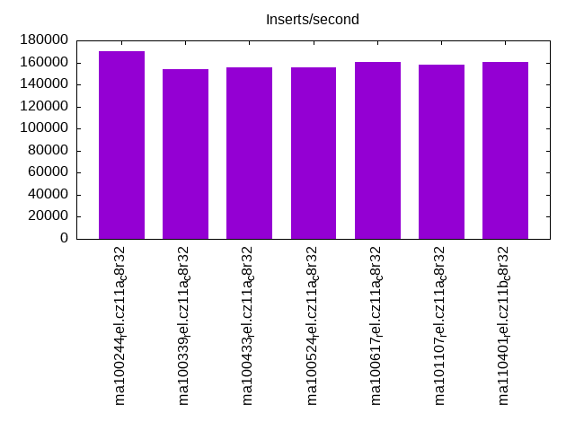
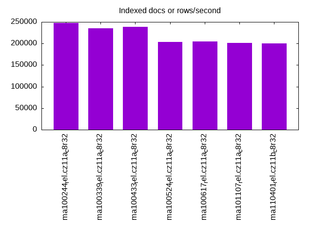
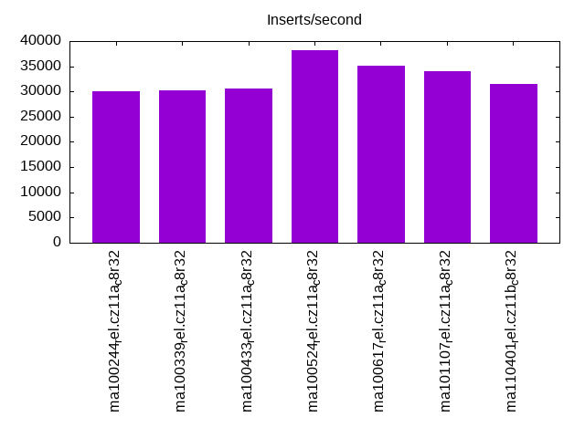
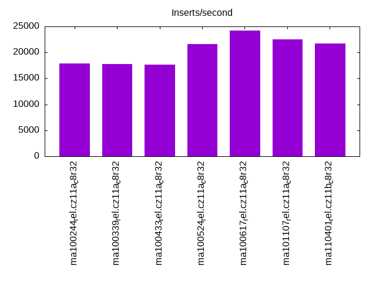
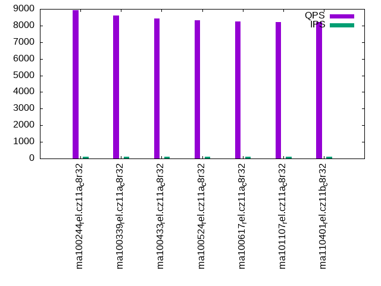
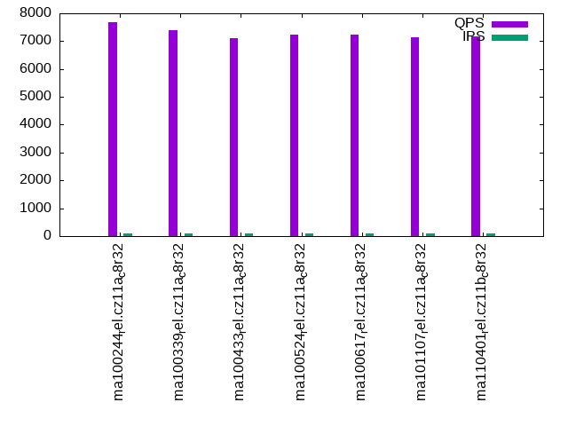
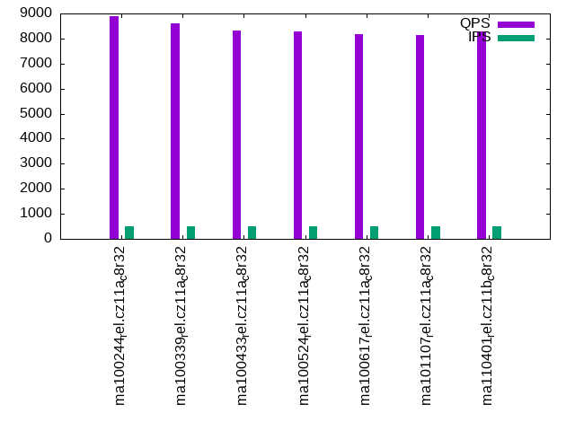
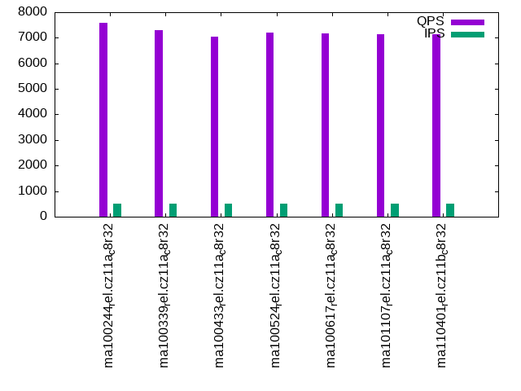
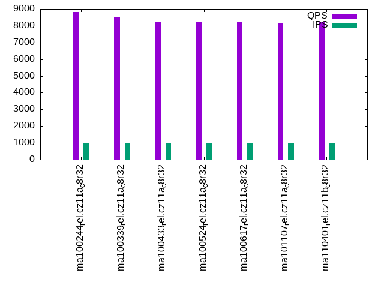
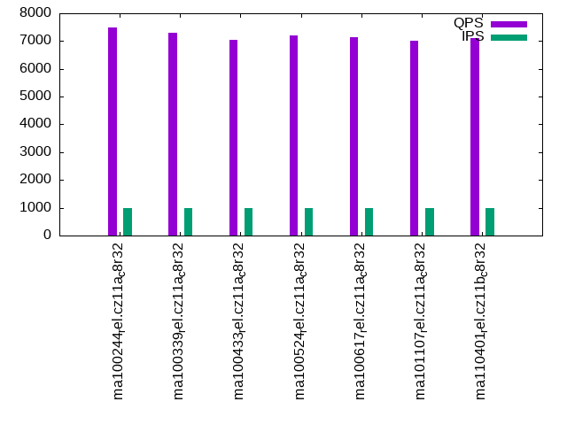

This is a report for the insert benchmark with 50M docs and 1 client(s). It is generated by scripts (bash, awk, sed) and Tufte might not be impressed. An overview of the insert benchmark is here and a short update is here. Below, by DBMS, I mean DBMS+version.config. An example is my8020.c10b40 where my means MySQL, 8020 is version 8.0.20 and c10b40 is the name for the configuration file.
The test server has 8 AMD cores, 32G RAM and an NVMe SSD. It is described here as the ASUS PN53. The benchmark was run with 1 client and there were 1 or 3 connections per client (1 for queries or inserts without rate limits, 1+1 for rate limited inserts+deletes). It uses 1 table. It loads 50M rows per table without secondary indexes, creates 3 secondary indexes per table, then inserts 40m+10m rows per table with a delete per insert to avoid growing the table. It then does 6 read+write tests for 1800s each that do queries as fast as possible with 100,100,500,500,1000,1000 inserts/s and the same for deletes/s per client concurrent with the queries. The database is cached in memory. Clients and the DBMS share one server. The per-database configs are in the per-database subdirectories here.
The tested DBMS are:
The numbers are inserts/s for l.i0, l.i1 and l.i2, indexed docs (or rows) /s for l.x and queries/s for qr100, qp100 thru qr1000, qp1000" The values are the average rate over the entire test for inserts (IPS) and queries (QPS). The range of values for IPS and QPS is split into 3 parts: bottom 25%, middle 50%, top 25%. Values in the bottom 25% have a red background, values in the top 25% have a green background and values in the middle have no color. A gray background is used for values that can be ignored because the DBMS did not sustain the target insert rate. Red backgrounds are not used when the minimum value is within 80% of the max value.
| dbms | l.i0 | l.x | l.i1 | l.i2 | qr100 | qp100 | qr500 | qp500 | qr1000 | qp1000 |
|---|---|---|---|---|---|---|---|---|---|---|
| ma100244_rel.cz11a_c8r32 | 170068 | 247525 | 30052 | 17857 | 8939 | 7689 | 8886 | 7600 | 8816 | 7495 |
| ma100339_rel.cz11a_c8r32 | 154321 | 235850 | 30257 | 17730 | 8619 | 7382 | 8604 | 7309 | 8508 | 7286 |
| ma100433_rel.cz11a_c8r32 | 155763 | 239235 | 30558 | 17606 | 8412 | 7109 | 8319 | 7034 | 8216 | 7038 |
| ma100524_rel.cz11a_c8r32 | 155763 | 203252 | 38204 | 21552 | 8304 | 7234 | 8283 | 7193 | 8234 | 7204 |
| ma100617_rel.cz11a_c8r32 | 160772 | 204918 | 35180 | 24154 | 8251 | 7244 | 8187 | 7176 | 8210 | 7134 |
| ma101107_rel.cz11a_c8r32 | 157729 | 201613 | 34100 | 22522 | 8210 | 7125 | 8126 | 7128 | 8156 | 7027 |
| ma110401_rel.cz11b_c8r32 | 160772 | 200000 | 31521 | 21739 | 8213 | 7173 | 8276 | 7141 | 8238 | 7110 |
This table has relative throughput, throughput for the DBMS relative to the DBMS in the first line, using the absolute throughput from the previous table. Values less than 0.95 have a yellow background. Values greater than 1.05 have a blue background.
| dbms | l.i0 | l.x | l.i1 | l.i2 | qr100 | qp100 | qr500 | qp500 | qr1000 | qp1000 |
|---|---|---|---|---|---|---|---|---|---|---|
| ma100244_rel.cz11a_c8r32 | 1.00 | 1.00 | 1.00 | 1.00 | 1.00 | 1.00 | 1.00 | 1.00 | 1.00 | 1.00 |
| ma100339_rel.cz11a_c8r32 | 0.91 | 0.95 | 1.01 | 0.99 | 0.96 | 0.96 | 0.97 | 0.96 | 0.97 | 0.97 |
| ma100433_rel.cz11a_c8r32 | 0.92 | 0.97 | 1.02 | 0.99 | 0.94 | 0.92 | 0.94 | 0.93 | 0.93 | 0.94 |
| ma100524_rel.cz11a_c8r32 | 0.92 | 0.82 | 1.27 | 1.21 | 0.93 | 0.94 | 0.93 | 0.95 | 0.93 | 0.96 |
| ma100617_rel.cz11a_c8r32 | 0.95 | 0.83 | 1.17 | 1.35 | 0.92 | 0.94 | 0.92 | 0.94 | 0.93 | 0.95 |
| ma101107_rel.cz11a_c8r32 | 0.93 | 0.81 | 1.13 | 1.26 | 0.92 | 0.93 | 0.91 | 0.94 | 0.93 | 0.94 |
| ma110401_rel.cz11b_c8r32 | 0.95 | 0.81 | 1.05 | 1.22 | 0.92 | 0.93 | 0.93 | 0.94 | 0.93 | 0.95 |
This lists the average rate of inserts/s for the tests that do inserts concurrent with queries. For such tests the query rate is listed in the table above. The read+write tests are setup so that the insert rate should match the target rate every second. Cells that are not at least 95% of the target have a red background to indicate a failure to satisfy the target.
| dbms | qr100.L1 | qp100.L2 | qr500.L3 | qp500.L4 | qr1000.L5 | qp1000.L6 |
|---|---|---|---|---|---|---|
| ma100244_rel.cz11a_c8r32 | 100 | 100 | 499 | 499 | 999 | 999 |
| ma100339_rel.cz11a_c8r32 | 100 | 100 | 499 | 499 | 999 | 999 |
| ma100433_rel.cz11a_c8r32 | 100 | 100 | 499 | 499 | 999 | 999 |
| ma100524_rel.cz11a_c8r32 | 100 | 100 | 499 | 500 | 999 | 999 |
| ma100617_rel.cz11a_c8r32 | 100 | 100 | 499 | 499 | 999 | 999 |
| ma101107_rel.cz11a_c8r32 | 100 | 100 | 499 | 499 | 999 | 999 |
| ma110401_rel.cz11b_c8r32 | 100 | 100 | 499 | 499 | 999 | 999 |
| target | 100 | 100 | 500 | 500 | 1000 | 1000 |
l.i0: load without secondary indexes. Graphs for performance per 1-second interval are here.
Average throughput:
Insert response time histogram: each cell has the percentage of responses that take <= the time in the header and max is the max response time in seconds. For the max column values in the top 25% of the range have a red background and in the bottom 25% of the range have a green background. The red background is not used when the min value is within 80% of the max value.
| dbms | 256us | 1ms | 4ms | 16ms | 64ms | 256ms | 1s | 4s | 16s | gt | max |
|---|---|---|---|---|---|---|---|---|---|---|---|
| ma100244_rel.cz11a_c8r32 | 99.457 | 0.214 | 0.284 | 0.040 | 0.004 | 0.129 | |||||
| ma100339_rel.cz11a_c8r32 | 99.338 | 0.293 | 0.341 | 0.024 | 0.004 | 0.133 | |||||
| ma100433_rel.cz11a_c8r32 | 99.364 | 0.268 | 0.356 | 0.007 | 0.004 | 0.136 | |||||
| ma100524_rel.cz11a_c8r32 | 99.276 | 0.263 | 0.396 | 0.061 | 0.004 | 0.128 | |||||
| ma100617_rel.cz11a_c8r32 | 99.511 | 0.238 | 0.234 | 0.012 | 0.004 | 0.163 | |||||
| ma101107_rel.cz11a_c8r32 | 99.499 | 0.253 | 0.231 | 0.013 | 0.005 | 0.169 | |||||
| ma110401_rel.cz11b_c8r32 | 99.516 | 0.239 | 0.228 | 0.013 | 0.005 | 0.179 |
Performance metrics for the DBMS listed above. Some are normalized by throughput, others are not. Legend for results is here.
ips qps rps rmbps wps wmbps rpq rkbpq wpi wkbpi csps cpups cspq cpupq dbgb1 dbgb2 rss maxop p50 p99 tag 170068 0 0 0.0 1204.9 63.8 0.000 0.000 0.007 0.384 19250 21.7 0.113 10 3.3 34.1 4.1 0.129 171909 142746 ma100244_rel.cz11a_c8r32 154321 0 0 0.0 1188.0 63.3 0.000 0.000 0.008 0.420 51212 28.8 0.332 15 3.3 34.1 4.1 0.133 156229 129161 ma100339_rel.cz11a_c8r32 155763 0 0 0.0 1182.4 63.1 0.000 0.000 0.008 0.415 52026 28.9 0.334 15 3.3 34.1 NA 0.136 157732 134057 ma100433_rel.cz11a_c8r32 155763 0 0 0.0 1286.9 51.3 0.000 0.000 0.008 0.337 68431 25.6 0.439 13 3.3 34.1 3.9 0.128 157777 136154 ma100524_rel.cz11a_c8r32 160772 0 0 0.0 613.9 39.3 0.000 0.000 0.004 0.250 20365 23.7 0.127 12 3.3 34.1 3.7 0.163 162722 140448 ma100617_rel.cz11a_c8r32 157729 0 0 0.0 642.6 40.3 0.000 0.000 0.004 0.262 19905 23.2 0.126 12 3.3 34.1 3.7 0.169 159478 137349 ma101107_rel.cz11a_c8r32 160772 0 0 0.0 661.3 41.1 0.000 0.000 0.004 0.262 21003 23.8 0.131 12 3.3 34.1 3.7 0.179 162421 140149 ma110401_rel.cz11b_c8r32
l.x: create secondary indexes.
Average throughput:
Performance metrics for the DBMS listed above. Some are normalized by throughput, others are not. Legend for results is here.
ips qps rps rmbps wps wmbps rpq rkbpq wpi wkbpi csps cpups cspq cpupq dbgb1 dbgb2 rss maxop p50 p99 tag 247525 0 0 0.0 2504.7 223.5 0.000 0.000 0.010 0.925 10873 12.6 0.044 4 7.6 38.4 6.9 0.001 NA NA ma100244_rel.cz11a_c8r32 235850 0 0 0.0 2393.0 213.5 0.000 0.000 0.010 0.927 10485 12.3 0.044 4 7.6 38.4 8.0 0.001 NA NA ma100339_rel.cz11a_c8r32 239235 0 0 0.0 2436.7 217.3 0.000 0.000 0.010 0.930 10331 12.5 0.043 4 7.5 38.3 NA 0.001 NA NA ma100433_rel.cz11a_c8r32 203252 0 0 0.0 1320.6 163.7 0.000 0.000 0.006 0.825 431 11.8 0.002 5 7.5 38.3 7.4 0.001 NA NA ma100524_rel.cz11a_c8r32 204918 0 0 0.0 2445.3 183.0 0.000 0.000 0.012 0.915 5602 12.2 0.027 5 7.5 38.3 7.3 0.001 NA NA ma100617_rel.cz11a_c8r32 201613 0 0 0.0 2332.0 178.0 0.000 0.000 0.012 0.904 5208 12.1 0.026 5 7.5 38.3 6.9 0.001 NA NA ma101107_rel.cz11a_c8r32 200000 0 0 0.0 2288.2 175.7 0.000 0.000 0.011 0.899 5101 12.1 0.026 5 7.5 38.3 6.7 0.001 NA NA ma110401_rel.cz11b_c8r32
l.i1: continue load after secondary indexes created with 50 inserts per transaction. Graphs for performance per 1-second interval are here.
Average throughput:
Insert response time histogram: each cell has the percentage of responses that take <= the time in the header and max is the max response time in seconds. For the max column values in the top 25% of the range have a red background and in the bottom 25% of the range have a green background. The red background is not used when the min value is within 80% of the max value.
| dbms | 256us | 1ms | 4ms | 16ms | 64ms | 256ms | 1s | 4s | 16s | gt | max |
|---|---|---|---|---|---|---|---|---|---|---|---|
| ma100244_rel.cz11a_c8r32 | 4.459 | 90.344 | 5.167 | 0.028 | 0.002 | 0.073 | |||||
| ma100339_rel.cz11a_c8r32 | 2.347 | 91.664 | 5.962 | 0.027 | 0.001 | 0.074 | |||||
| ma100433_rel.cz11a_c8r32 | 1.449 | 92.920 | 5.603 | 0.028 | 0.001 | 0.153 | |||||
| ma100524_rel.cz11a_c8r32 | 5.800 | 93.003 | 1.138 | 0.055 | 0.001 | 0.003 | 0.390 | ||||
| ma100617_rel.cz11a_c8r32 | 6.307 | 92.539 | 1.102 | 0.051 | 0.001 | nonzero | 0.313 | ||||
| ma101107_rel.cz11a_c8r32 | 2.443 | 96.356 | 1.163 | 0.036 | 0.001 | nonzero | 0.412 | ||||
| ma110401_rel.cz11b_c8r32 | 5.181 | 92.208 | 2.312 | 0.297 | 0.003 | 0.215 |
Delete response time histogram: each cell has the percentage of responses that take <= the time in the header and max is the max response time in seconds. For the max column values in the top 25% of the range have a red background and in the bottom 25% of the range have a green background. The red background is not used when the min value is within 80% of the max value.
| dbms | 256us | 1ms | 4ms | 16ms | 64ms | 256ms | 1s | 4s | 16s | gt | max |
|---|---|---|---|---|---|---|---|---|---|---|---|
| ma100244_rel.cz11a_c8r32 | 61.624 | 33.965 | 4.399 | 0.010 | 0.001 | 0.073 | |||||
| ma100339_rel.cz11a_c8r32 | 77.893 | 17.161 | 4.938 | 0.008 | nonzero | 0.072 | |||||
| ma100433_rel.cz11a_c8r32 | 77.762 | 17.601 | 4.627 | 0.010 | nonzero | 0.068 | |||||
| ma100524_rel.cz11a_c8r32 | 94.793 | 4.504 | 0.675 | 0.023 | 0.001 | 0.002 | 0.389 | ||||
| ma100617_rel.cz11a_c8r32 | 59.198 | 39.974 | 0.792 | 0.036 | 0.001 | 0.096 | |||||
| ma101107_rel.cz11a_c8r32 | 48.607 | 50.515 | 0.852 | 0.026 | 0.001 | 0.119 | |||||
| ma110401_rel.cz11b_c8r32 | 54.102 | 43.651 | 2.004 | 0.241 | 0.003 | 0.213 |
Performance metrics for the DBMS listed above. Some are normalized by throughput, others are not. Legend for results is here.
ips qps rps rmbps wps wmbps rpq rkbpq wpi wkbpi csps cpups cspq cpupq dbgb1 dbgb2 rss maxop p50 p99 tag 30052 0 0 0.0 10766.7 339.2 0.000 0.000 0.358 11.558 57360 45.8 1.909 122 10.0 40.9 11.1 0.073 30679 10389 ma100244_rel.cz11a_c8r32 30257 0 0 0.0 12433.8 386.2 0.000 0.000 0.411 13.071 70780 43.8 2.339 116 10.1 40.9 11.1 0.074 30767 9640 ma100339_rel.cz11a_c8r32 30558 0 0 0.0 11873.2 370.9 0.000 0.000 0.389 12.430 69762 43.7 2.283 114 10.1 40.9 NA 0.153 31217 8990 ma100433_rel.cz11a_c8r32 38204 0 0 0.0 9187.8 289.4 0.000 0.000 0.240 7.758 67976 36.6 1.779 77 10.8 42.7 11.1 0.390 40856 7745 ma100524_rel.cz11a_c8r32 35180 0 0 0.0 5442.5 184.0 0.000 0.000 0.155 5.355 91184 30.8 2.592 70 10.1 40.9 10.0 0.313 37720 11243 ma100617_rel.cz11a_c8r32 34100 0 874 3.4 5322.9 179.9 0.026 0.103 0.156 5.401 88296 29.8 2.589 70 10.1 40.9 10.0 0.412 36361 11742 ma101107_rel.cz11a_c8r32 31521 0 840 3.3 4950.3 165.6 0.027 0.107 0.157 5.379 80042 27.3 2.539 69 10.1 40.9 10.0 0.215 31616 12986 ma110401_rel.cz11b_c8r32
l.i2: continue load after secondary indexes created with 5 inserts per transaction. Graphs for performance per 1-second interval are here.
Average throughput:
Insert response time histogram: each cell has the percentage of responses that take <= the time in the header and max is the max response time in seconds. For the max column values in the top 25% of the range have a red background and in the bottom 25% of the range have a green background. The red background is not used when the min value is within 80% of the max value.
| dbms | 256us | 1ms | 4ms | 16ms | 64ms | 256ms | 1s | 4s | 16s | gt | max |
|---|---|---|---|---|---|---|---|---|---|---|---|
| ma100244_rel.cz11a_c8r32 | 88.654 | 10.341 | 0.142 | 0.861 | 0.002 | nonzero | 0.074 | ||||
| ma100339_rel.cz11a_c8r32 | 87.125 | 11.865 | 0.147 | 0.862 | 0.001 | nonzero | 0.073 | ||||
| ma100433_rel.cz11a_c8r32 | 86.412 | 12.584 | 0.147 | 0.856 | 0.001 | nonzero | 0.070 | ||||
| ma100524_rel.cz11a_c8r32 | 92.552 | 7.274 | 0.144 | 0.029 | 0.002 | nonzero | 0.064 | ||||
| ma100617_rel.cz11a_c8r32 | 95.162 | 4.776 | 0.049 | 0.013 | 0.001 | 0.060 | |||||
| ma101107_rel.cz11a_c8r32 | 88.712 | 11.211 | 0.065 | 0.012 | nonzero | 0.059 | |||||
| ma110401_rel.cz11b_c8r32 | 90.142 | 9.685 | 0.058 | 0.112 | 0.003 | nonzero | 0.068 |
Delete response time histogram: each cell has the percentage of responses that take <= the time in the header and max is the max response time in seconds. For the max column values in the top 25% of the range have a red background and in the bottom 25% of the range have a green background. The red background is not used when the min value is within 80% of the max value.
| dbms | 256us | 1ms | 4ms | 16ms | 64ms | 256ms | 1s | 4s | 16s | gt | max |
|---|---|---|---|---|---|---|---|---|---|---|---|
| ma100244_rel.cz11a_c8r32 | 91.943 | 7.066 | 0.137 | 0.853 | 0.001 | nonzero | 0.074 | ||||
| ma100339_rel.cz11a_c8r32 | 91.847 | 7.150 | 0.148 | 0.855 | 0.001 | nonzero | 0.073 | ||||
| ma100433_rel.cz11a_c8r32 | 91.751 | 7.248 | 0.149 | 0.851 | 0.001 | nonzero | 0.071 | ||||
| ma100524_rel.cz11a_c8r32 | 95.773 | 4.075 | 0.127 | 0.023 | 0.001 | nonzero | 0.064 | ||||
| ma100617_rel.cz11a_c8r32 | 97.759 | 2.186 | 0.043 | 0.011 | 0.001 | 0.060 | |||||
| ma101107_rel.cz11a_c8r32 | 95.313 | 4.616 | 0.059 | 0.011 | nonzero | 0.059 | |||||
| ma110401_rel.cz11b_c8r32 | 94.122 | 5.724 | 0.051 | 0.100 | 0.003 | nonzero | 0.068 |
Performance metrics for the DBMS listed above. Some are normalized by throughput, others are not. Legend for results is here.
ips qps rps rmbps wps wmbps rpq rkbpq wpi wkbpi csps cpups cspq cpupq dbgb1 dbgb2 rss maxop p50 p99 tag 17857 0 0 0.0 14055.9 408.5 0.000 0.000 0.787 23.423 199484 44.4 11.171 199 10.3 41.1 11.4 0.074 17796 15319 ma100244_rel.cz11a_c8r32 17730 0 0 0.0 14479.1 420.8 0.000 0.000 0.817 24.301 237744 45.3 13.409 204 10.3 41.1 11.3 0.073 17556 15334 ma100339_rel.cz11a_c8r32 17606 0 0 0.0 14451.4 419.1 0.000 0.000 0.821 24.377 240681 45.2 13.671 205 10.3 41.1 NA 0.070 17526 14919 ma100433_rel.cz11a_c8r32 21552 0 0 0.0 10936.6 317.9 0.000 0.000 0.507 15.106 337340 46.4 15.653 172 11.0 43.0 11.1 0.064 21602 20298 ma100524_rel.cz11a_c8r32 24154 0 0 0.0 2699.5 93.5 0.000 0.000 0.112 3.965 117801 34.6 4.877 115 10.3 41.2 10.2 0.060 24233 23035 ma100617_rel.cz11a_c8r32 22522 0 3192 12.5 2614.7 90.7 0.142 0.567 0.116 4.124 114543 33.2 5.086 118 10.3 41.2 10.2 0.059 22488 21487 ma101107_rel.cz11a_c8r32 21739 0 3080 12.0 2563.0 87.9 0.142 0.567 0.118 4.143 110890 32.0 5.101 118 10.3 41.1 10.2 0.068 22557 18266 ma110401_rel.cz11b_c8r32
qr100.L1: range queries with 100 insert/s per client. Graphs for performance per 1-second interval are here.
Average throughput:
Query response time histogram: each cell has the percentage of responses that take <= the time in the header and max is the max response time in seconds. For max values in the top 25% of the range have a red background and in the bottom 25% of the range have a green background. The red background is not used when the min value is within 80% of the max value.
| dbms | 256us | 1ms | 4ms | 16ms | 64ms | 256ms | 1s | 4s | 16s | gt | max |
|---|---|---|---|---|---|---|---|---|---|---|---|
| ma100244_rel.cz11a_c8r32 | 99.946 | 0.054 | nonzero | nonzero | nonzero | 0.016 | |||||
| ma100339_rel.cz11a_c8r32 | 99.946 | 0.053 | nonzero | nonzero | nonzero | 0.021 | |||||
| ma100433_rel.cz11a_c8r32 | 99.951 | 0.049 | nonzero | nonzero | nonzero | 0.018 | |||||
| ma100524_rel.cz11a_c8r32 | 99.973 | 0.027 | nonzero | 0.001 | |||||||
| ma100617_rel.cz11a_c8r32 | 99.991 | 0.009 | nonzero | 0.002 | |||||||
| ma101107_rel.cz11a_c8r32 | 99.994 | 0.006 | nonzero | 0.002 | |||||||
| ma110401_rel.cz11b_c8r32 | 99.994 | 0.006 | nonzero | 0.002 |
Insert response time histogram: each cell has the percentage of responses that take <= the time in the header and max is the max response time in seconds. For max values in the top 25% of the range have a red background and in the bottom 25% of the range have a green background. The red background is not used when the min value is within 80% of the max value.
| dbms | 256us | 1ms | 4ms | 16ms | 64ms | 256ms | 1s | 4s | 16s | gt | max |
|---|---|---|---|---|---|---|---|---|---|---|---|
| ma100244_rel.cz11a_c8r32 | 97.056 | 2.361 | 0.583 | 0.038 | |||||||
| ma100339_rel.cz11a_c8r32 | 96.833 | 2.333 | 0.833 | 0.036 | |||||||
| ma100433_rel.cz11a_c8r32 | 97.194 | 2.250 | 0.556 | 0.036 | |||||||
| ma100524_rel.cz11a_c8r32 | 0.528 | 99.472 | 0.002 | ||||||||
| ma100617_rel.cz11a_c8r32 | 10.806 | 89.194 | 0.002 | ||||||||
| ma101107_rel.cz11a_c8r32 | 0.472 | 52.944 | 46.583 | 0.011 | |||||||
| ma110401_rel.cz11b_c8r32 | 0.944 | 52.472 | 46.583 | 0.011 |
Delete response time histogram: each cell has the percentage of responses that take <= the time in the header and max is the max response time in seconds. For max values in the top 25% of the range have a red background and in the bottom 25% of the range have a green background. The red background is not used when the min value is within 80% of the max value.
| dbms | 256us | 1ms | 4ms | 16ms | 64ms | 256ms | 1s | 4s | 16s | gt | max |
|---|---|---|---|---|---|---|---|---|---|---|---|
| ma100244_rel.cz11a_c8r32 | 7.167 | 90.333 | 2.056 | 0.444 | 0.031 | ||||||
| ma100339_rel.cz11a_c8r32 | 14.861 | 82.361 | 2.306 | 0.472 | 0.030 | ||||||
| ma100433_rel.cz11a_c8r32 | 18.778 | 78.667 | 2.278 | 0.278 | 0.024 | ||||||
| ma100524_rel.cz11a_c8r32 | 44.278 | 55.722 | 0.002 | ||||||||
| ma100617_rel.cz11a_c8r32 | 51.667 | 48.333 | 0.002 | ||||||||
| ma101107_rel.cz11a_c8r32 | 4.083 | 49.361 | 46.556 | 0.011 | |||||||
| ma110401_rel.cz11b_c8r32 | 3.861 | 49.556 | 46.583 | 0.011 |
Performance metrics for the DBMS listed above. Some are normalized by throughput, others are not. Legend for results is here.
ips qps rps rmbps wps wmbps rpq rkbpq wpi wkbpi csps cpups cspq cpupq dbgb1 dbgb2 rss maxop p50 p99 tag 100 8939 0 0.0 861.6 23.9 0.000 0.000 8.633 244.866 37842 12.9 4.233 115 10.3 41.1 11.4 0.016 8938 8838 ma100244_rel.cz11a_c8r32 100 8619 0 0.0 869.6 24.1 0.000 0.000 8.713 247.158 36703 12.9 4.258 120 10.3 41.1 11.3 0.021 8615 8503 ma100339_rel.cz11a_c8r32 100 8412 0 0.0 865.8 24.0 0.000 0.000 8.675 246.055 35998 12.9 4.279 123 10.3 41.1 NA 0.018 8410 8326 ma100433_rel.cz11a_c8r32 100 8304 0 0.0 2.5 0.1 0.000 0.000 0.025 1.213 33066 12.5 3.982 120 11.0 43.0 11.1 0.001 8311 8215 ma100524_rel.cz11a_c8r32 100 8251 0 0.0 2.4 0.1 0.000 0.000 0.024 1.187 31687 12.6 3.840 122 10.3 41.2 10.3 0.002 8250 8183 ma100617_rel.cz11a_c8r32 100 8210 4 0.0 2.3 0.1 0.000 0.002 0.024 1.192 31547 12.7 3.842 124 10.3 41.2 10.2 0.002 8215 8151 ma101107_rel.cz11a_c8r32 100 8213 4 0.0 2.4 0.1 0.000 0.002 0.024 1.203 31561 12.6 3.843 123 10.3 41.1 10.2 0.002 8215 8119 ma110401_rel.cz11b_c8r32
qp100.L2: point queries with 100 insert/s per client. Graphs for performance per 1-second interval are here.
Average throughput:
Query response time histogram: each cell has the percentage of responses that take <= the time in the header and max is the max response time in seconds. For max values in the top 25% of the range have a red background and in the bottom 25% of the range have a green background. The red background is not used when the min value is within 80% of the max value.
| dbms | 256us | 1ms | 4ms | 16ms | 64ms | 256ms | 1s | 4s | 16s | gt | max |
|---|---|---|---|---|---|---|---|---|---|---|---|
| ma100244_rel.cz11a_c8r32 | 99.835 | 0.165 | nonzero | nonzero | 0.015 | ||||||
| ma100339_rel.cz11a_c8r32 | 99.849 | 0.150 | nonzero | nonzero | 0.016 | ||||||
| ma100433_rel.cz11a_c8r32 | 99.846 | 0.154 | nonzero | nonzero | 0.015 | ||||||
| ma100524_rel.cz11a_c8r32 | 99.964 | 0.036 | nonzero | 0.001 | |||||||
| ma100617_rel.cz11a_c8r32 | 99.973 | 0.027 | nonzero | 0.002 | |||||||
| ma101107_rel.cz11a_c8r32 | 99.981 | 0.018 | nonzero | 0.002 | |||||||
| ma110401_rel.cz11b_c8r32 | 99.983 | 0.017 | nonzero | 0.002 |
Insert response time histogram: each cell has the percentage of responses that take <= the time in the header and max is the max response time in seconds. For max values in the top 25% of the range have a red background and in the bottom 25% of the range have a green background. The red background is not used when the min value is within 80% of the max value.
| dbms | 256us | 1ms | 4ms | 16ms | 64ms | 256ms | 1s | 4s | 16s | gt | max |
|---|---|---|---|---|---|---|---|---|---|---|---|
| ma100244_rel.cz11a_c8r32 | 96.361 | 2.694 | 0.944 | 0.031 | |||||||
| ma100339_rel.cz11a_c8r32 | 96.722 | 2.528 | 0.750 | 0.042 | |||||||
| ma100433_rel.cz11a_c8r32 | 96.500 | 2.556 | 0.944 | 0.031 | |||||||
| ma100524_rel.cz11a_c8r32 | 100.000 | 0.002 | |||||||||
| ma100617_rel.cz11a_c8r32 | 0.444 | 99.528 | 0.028 | 0.011 | |||||||
| ma101107_rel.cz11a_c8r32 | 53.083 | 46.917 | 0.011 | ||||||||
| ma110401_rel.cz11b_c8r32 | 0.083 | 53.389 | 46.528 | 0.014 |
Delete response time histogram: each cell has the percentage of responses that take <= the time in the header and max is the max response time in seconds. For max values in the top 25% of the range have a red background and in the bottom 25% of the range have a green background. The red background is not used when the min value is within 80% of the max value.
| dbms | 256us | 1ms | 4ms | 16ms | 64ms | 256ms | 1s | 4s | 16s | gt | max |
|---|---|---|---|---|---|---|---|---|---|---|---|
| ma100244_rel.cz11a_c8r32 | 96.861 | 2.694 | 0.444 | 0.037 | |||||||
| ma100339_rel.cz11a_c8r32 | 1.306 | 95.639 | 2.583 | 0.472 | 0.032 | ||||||
| ma100433_rel.cz11a_c8r32 | 0.472 | 96.444 | 2.722 | 0.361 | 0.026 | ||||||
| ma100524_rel.cz11a_c8r32 | 20.278 | 79.722 | 0.002 | ||||||||
| ma100617_rel.cz11a_c8r32 | 45.444 | 54.556 | 0.002 | ||||||||
| ma101107_rel.cz11a_c8r32 | 2.389 | 50.694 | 46.917 | 0.011 | |||||||
| ma110401_rel.cz11b_c8r32 | 2.639 | 50.833 | 46.528 | 0.014 |
Performance metrics for the DBMS listed above. Some are normalized by throughput, others are not. Legend for results is here.
ips qps rps rmbps wps wmbps rpq rkbpq wpi wkbpi csps cpups cspq cpupq dbgb1 dbgb2 rss maxop p50 p99 tag 100 7689 0 0.0 854.7 23.7 0.000 0.000 8.564 242.886 34393 13.1 4.473 136 10.3 41.1 11.4 0.015 7704 7160 ma100244_rel.cz11a_c8r32 100 7382 0 0.0 855.7 23.7 0.000 0.000 8.574 243.169 33266 13.1 4.506 142 10.3 41.1 11.3 0.016 7399 7064 ma100339_rel.cz11a_c8r32 100 7109 0 0.0 856.6 23.7 0.000 0.000 8.583 243.433 32281 13.1 4.541 147 10.3 41.1 NA 0.015 7115 6777 ma100433_rel.cz11a_c8r32 100 7234 0 0.0 2.5 0.1 0.000 0.000 0.025 1.176 30322 12.9 4.191 143 11.0 43.0 11.1 0.001 7240 7032 ma100524_rel.cz11a_c8r32 100 7244 0 0.0 21.1 0.6 0.000 0.000 0.212 6.481 29272 12.9 4.041 142 10.3 41.2 10.3 0.002 7243 7080 ma100617_rel.cz11a_c8r32 100 7125 3 0.0 21.1 0.6 0.000 0.002 0.211 6.491 28848 13.2 4.049 148 10.3 41.2 10.2 0.002 7128 6936 ma101107_rel.cz11a_c8r32 100 7173 3 0.0 16.3 0.5 0.000 0.002 0.163 5.067 28995 13.0 4.042 145 10.3 41.1 10.2 0.002 7176 6968 ma110401_rel.cz11b_c8r32
qr500.L3: range queries with 500 insert/s per client. Graphs for performance per 1-second interval are here.
Average throughput:
Query response time histogram: each cell has the percentage of responses that take <= the time in the header and max is the max response time in seconds. For max values in the top 25% of the range have a red background and in the bottom 25% of the range have a green background. The red background is not used when the min value is within 80% of the max value.
| dbms | 256us | 1ms | 4ms | 16ms | 64ms | 256ms | 1s | 4s | 16s | gt | max |
|---|---|---|---|---|---|---|---|---|---|---|---|
| ma100244_rel.cz11a_c8r32 | 99.924 | 0.074 | 0.001 | 0.002 | nonzero | 0.020 | |||||
| ma100339_rel.cz11a_c8r32 | 99.928 | 0.070 | 0.001 | 0.002 | nonzero | 0.023 | |||||
| ma100433_rel.cz11a_c8r32 | 99.930 | 0.067 | 0.001 | 0.002 | nonzero | 0.026 | |||||
| ma100524_rel.cz11a_c8r32 | 99.973 | 0.026 | nonzero | 0.002 | |||||||
| ma100617_rel.cz11a_c8r32 | 99.983 | 0.017 | nonzero | nonzero | 0.005 | ||||||
| ma101107_rel.cz11a_c8r32 | 99.984 | 0.016 | nonzero | nonzero | 0.004 | ||||||
| ma110401_rel.cz11b_c8r32 | 99.987 | 0.013 | nonzero | nonzero | 0.009 |
Insert response time histogram: each cell has the percentage of responses that take <= the time in the header and max is the max response time in seconds. For max values in the top 25% of the range have a red background and in the bottom 25% of the range have a green background. The red background is not used when the min value is within 80% of the max value.
| dbms | 256us | 1ms | 4ms | 16ms | 64ms | 256ms | 1s | 4s | 16s | gt | max |
|---|---|---|---|---|---|---|---|---|---|---|---|
| ma100244_rel.cz11a_c8r32 | 8.328 | 84.061 | 6.400 | 1.211 | 0.037 | ||||||
| ma100339_rel.cz11a_c8r32 | 9.850 | 82.617 | 6.611 | 0.922 | 0.041 | ||||||
| ma100433_rel.cz11a_c8r32 | 8.744 | 83.733 | 6.383 | 1.139 | 0.045 | ||||||
| ma100524_rel.cz11a_c8r32 | 15.561 | 84.439 | 0.002 | ||||||||
| ma100617_rel.cz11a_c8r32 | 46.878 | 53.117 | 0.006 | 0.005 | |||||||
| ma101107_rel.cz11a_c8r32 | 11.956 | 78.694 | 9.350 | 0.011 | |||||||
| ma110401_rel.cz11b_c8r32 | 23.078 | 67.650 | 9.272 | 0.011 |
Delete response time histogram: each cell has the percentage of responses that take <= the time in the header and max is the max response time in seconds. For max values in the top 25% of the range have a red background and in the bottom 25% of the range have a green background. The red background is not used when the min value is within 80% of the max value.
| dbms | 256us | 1ms | 4ms | 16ms | 64ms | 256ms | 1s | 4s | 16s | gt | max |
|---|---|---|---|---|---|---|---|---|---|---|---|
| ma100244_rel.cz11a_c8r32 | 31.944 | 60.817 | 6.356 | 0.883 | 0.031 | ||||||
| ma100339_rel.cz11a_c8r32 | 53.494 | 39.328 | 6.472 | 0.706 | 0.036 | ||||||
| ma100433_rel.cz11a_c8r32 | 54.128 | 38.683 | 6.600 | 0.589 | 0.039 | ||||||
| ma100524_rel.cz11a_c8r32 | 87.361 | 12.639 | 0.002 | ||||||||
| ma100617_rel.cz11a_c8r32 | 88.761 | 11.233 | 0.006 | 0.005 | |||||||
| ma101107_rel.cz11a_c8r32 | 78.511 | 12.139 | 9.350 | 0.011 | |||||||
| ma110401_rel.cz11b_c8r32 | 78.950 | 11.783 | 9.267 | 0.011 |
Performance metrics for the DBMS listed above. Some are normalized by throughput, others are not. Legend for results is here.
ips qps rps rmbps wps wmbps rpq rkbpq wpi wkbpi csps cpups cspq cpupq dbgb1 dbgb2 rss maxop p50 p99 tag 499 8886 0 0.0 3634.3 101.2 0.000 0.000 7.277 207.525 45991 14.3 5.176 129 10.3 41.1 11.4 0.020 8902 8518 ma100244_rel.cz11a_c8r32 499 8604 0 0.0 3654.1 101.8 0.000 0.000 7.317 208.668 45173 14.3 5.250 133 10.3 41.1 11.3 0.023 8614 8279 ma100339_rel.cz11a_c8r32 499 8319 0 0.0 3653.2 101.7 0.000 0.000 7.315 208.612 44500 14.4 5.349 138 10.3 41.1 NA 0.026 8330 8010 ma100433_rel.cz11a_c8r32 499 8283 0 0.0 5.9 0.5 0.000 0.000 0.012 1.120 33255 13.2 4.015 127 11.0 43.0 11.1 0.002 8279 8231 ma100524_rel.cz11a_c8r32 499 8187 0 0.0 12.2 0.7 0.000 0.000 0.024 1.477 31661 13.2 3.867 129 10.3 41.2 10.3 0.005 8199 8122 ma100617_rel.cz11a_c8r32 499 8126 19 0.1 18.6 0.9 0.002 0.009 0.037 1.855 31531 13.2 3.880 130 10.3 41.2 10.2 0.004 8135 8071 ma101107_rel.cz11a_c8r32 499 8276 19 0.1 19.0 0.9 0.002 0.009 0.038 1.861 32089 13.2 3.877 128 10.3 41.1 10.2 0.009 8279 8215 ma110401_rel.cz11b_c8r32
qp500.L4: point queries with 500 insert/s per client. Graphs for performance per 1-second interval are here.
Average throughput:
Query response time histogram: each cell has the percentage of responses that take <= the time in the header and max is the max response time in seconds. For max values in the top 25% of the range have a red background and in the bottom 25% of the range have a green background. The red background is not used when the min value is within 80% of the max value.
| dbms | 256us | 1ms | 4ms | 16ms | 64ms | 256ms | 1s | 4s | 16s | gt | max |
|---|---|---|---|---|---|---|---|---|---|---|---|
| ma100244_rel.cz11a_c8r32 | 99.754 | 0.246 | nonzero | nonzero | 0.015 | ||||||
| ma100339_rel.cz11a_c8r32 | 99.793 | 0.206 | nonzero | 0.001 | 0.015 | ||||||
| ma100433_rel.cz11a_c8r32 | 99.792 | 0.207 | nonzero | nonzero | nonzero | 0.021 | |||||
| ma100524_rel.cz11a_c8r32 | 99.935 | 0.065 | nonzero | 0.002 | |||||||
| ma100617_rel.cz11a_c8r32 | 99.954 | 0.046 | nonzero | 0.004 | |||||||
| ma101107_rel.cz11a_c8r32 | 99.968 | 0.032 | nonzero | nonzero | 0.004 | ||||||
| ma110401_rel.cz11b_c8r32 | 99.965 | 0.035 | nonzero | nonzero | 0.004 |
Insert response time histogram: each cell has the percentage of responses that take <= the time in the header and max is the max response time in seconds. For max values in the top 25% of the range have a red background and in the bottom 25% of the range have a green background. The red background is not used when the min value is within 80% of the max value.
| dbms | 256us | 1ms | 4ms | 16ms | 64ms | 256ms | 1s | 4s | 16s | gt | max |
|---|---|---|---|---|---|---|---|---|---|---|---|
| ma100244_rel.cz11a_c8r32 | 6.972 | 85.517 | 6.550 | 0.961 | 0.037 | ||||||
| ma100339_rel.cz11a_c8r32 | 8.117 | 84.267 | 6.739 | 0.878 | 0.042 | ||||||
| ma100433_rel.cz11a_c8r32 | 6.789 | 85.744 | 6.661 | 0.806 | 0.032 | ||||||
| ma100524_rel.cz11a_c8r32 | 9.111 | 90.889 | 0.002 | ||||||||
| ma100617_rel.cz11a_c8r32 | 19.100 | 80.900 | 0.002 | ||||||||
| ma101107_rel.cz11a_c8r32 | 5.106 | 85.617 | 9.278 | 0.011 | |||||||
| ma110401_rel.cz11b_c8r32 | 13.200 | 77.544 | 9.256 | 0.011 |
Delete response time histogram: each cell has the percentage of responses that take <= the time in the header and max is the max response time in seconds. For max values in the top 25% of the range have a red background and in the bottom 25% of the range have a green background. The red background is not used when the min value is within 80% of the max value.
| dbms | 256us | 1ms | 4ms | 16ms | 64ms | 256ms | 1s | 4s | 16s | gt | max |
|---|---|---|---|---|---|---|---|---|---|---|---|
| ma100244_rel.cz11a_c8r32 | 25.289 | 67.789 | 6.294 | 0.628 | 0.043 | ||||||
| ma100339_rel.cz11a_c8r32 | 45.761 | 47.183 | 6.533 | 0.522 | 0.037 | ||||||
| ma100433_rel.cz11a_c8r32 | 44.844 | 48.061 | 6.483 | 0.611 | 0.035 | ||||||
| ma100524_rel.cz11a_c8r32 | 79.700 | 20.300 | 0.002 | ||||||||
| ma100617_rel.cz11a_c8r32 | 86.400 | 13.600 | 0.002 | ||||||||
| ma101107_rel.cz11a_c8r32 | 74.383 | 16.339 | 9.278 | 0.011 | |||||||
| ma110401_rel.cz11b_c8r32 | 76.511 | 14.239 | 9.250 | 0.011 |
Performance metrics for the DBMS listed above. Some are normalized by throughput, others are not. Legend for results is here.
ips qps rps rmbps wps wmbps rpq rkbpq wpi wkbpi csps cpups cspq cpupq dbgb1 dbgb2 rss maxop p50 p99 tag 499 7600 0 0.0 3630.1 101.1 0.000 0.000 7.269 207.296 42419 14.4 5.581 152 10.3 41.1 11.3 0.015 7623 7096 ma100244_rel.cz11a_c8r32 499 7309 0 0.0 3653.6 101.8 0.000 0.000 7.316 208.645 41582 14.4 5.689 158 10.3 41.1 11.3 0.015 7320 6937 ma100339_rel.cz11a_c8r32 499 7034 0 0.0 3654.5 101.8 0.000 0.000 7.318 208.691 40864 14.4 5.810 164 10.3 41.1 NA 0.021 7048 6760 ma100433_rel.cz11a_c8r32 500 7193 0 0.0 5.9 0.5 0.000 0.000 0.012 1.115 30424 13.3 4.230 148 11.0 43.0 11.1 0.002 7192 7016 ma100524_rel.cz11a_c8r32 499 7176 0 0.0 5.9 0.5 0.000 0.000 0.012 1.122 29150 13.3 4.062 148 10.3 41.2 10.3 0.004 7192 6952 ma100617_rel.cz11a_c8r32 499 7128 18 0.1 12.3 0.7 0.003 0.010 0.025 1.499 29038 13.3 4.074 149 10.3 41.2 10.2 0.004 7131 6942 ma101107_rel.cz11a_c8r32 499 7141 18 0.1 12.8 0.7 0.003 0.010 0.026 1.521 29093 13.4 4.074 150 10.3 41.1 10.2 0.004 7144 6952 ma110401_rel.cz11b_c8r32
qr1000.L5: range queries with 1000 insert/s per client. Graphs for performance per 1-second interval are here.
Average throughput:
Query response time histogram: each cell has the percentage of responses that take <= the time in the header and max is the max response time in seconds. For max values in the top 25% of the range have a red background and in the bottom 25% of the range have a green background. The red background is not used when the min value is within 80% of the max value.
| dbms | 256us | 1ms | 4ms | 16ms | 64ms | 256ms | 1s | 4s | 16s | gt | max |
|---|---|---|---|---|---|---|---|---|---|---|---|
| ma100244_rel.cz11a_c8r32 | 99.894 | 0.102 | 0.002 | 0.003 | nonzero | 0.037 | |||||
| ma100339_rel.cz11a_c8r32 | 99.901 | 0.094 | 0.002 | 0.003 | nonzero | 0.028 | |||||
| ma100433_rel.cz11a_c8r32 | 99.894 | 0.102 | 0.002 | 0.003 | nonzero | 0.028 | |||||
| ma100524_rel.cz11a_c8r32 | 99.969 | 0.031 | nonzero | 0.002 | |||||||
| ma100617_rel.cz11a_c8r32 | 99.976 | 0.023 | 0.001 | nonzero | 0.013 | ||||||
| ma101107_rel.cz11a_c8r32 | 99.978 | 0.021 | 0.001 | nonzero | 0.008 | ||||||
| ma110401_rel.cz11b_c8r32 | 99.981 | 0.018 | nonzero | nonzero | 0.015 |
Insert response time histogram: each cell has the percentage of responses that take <= the time in the header and max is the max response time in seconds. For max values in the top 25% of the range have a red background and in the bottom 25% of the range have a green background. The red background is not used when the min value is within 80% of the max value.
| dbms | 256us | 1ms | 4ms | 16ms | 64ms | 256ms | 1s | 4s | 16s | gt | max |
|---|---|---|---|---|---|---|---|---|---|---|---|
| ma100244_rel.cz11a_c8r32 | 11.486 | 78.575 | 9.089 | 0.850 | 0.038 | ||||||
| ma100339_rel.cz11a_c8r32 | 12.628 | 77.508 | 9.067 | 0.797 | 0.037 | ||||||
| ma100433_rel.cz11a_c8r32 | 10.236 | 79.867 | 9.181 | 0.717 | 0.039 | ||||||
| ma100524_rel.cz11a_c8r32 | 23.525 | 76.472 | 0.003 | 0.035 | |||||||
| ma100617_rel.cz11a_c8r32 | 50.483 | 49.381 | 0.133 | 0.003 | 0.027 | ||||||
| ma101107_rel.cz11a_c8r32 | 20.794 | 74.481 | 4.722 | 0.003 | 0.042 | ||||||
| ma110401_rel.cz11b_c8r32 | 31.753 | 63.400 | 4.836 | 0.011 | 0.040 |
Delete response time histogram: each cell has the percentage of responses that take <= the time in the header and max is the max response time in seconds. For max values in the top 25% of the range have a red background and in the bottom 25% of the range have a green background. The red background is not used when the min value is within 80% of the max value.
| dbms | 256us | 1ms | 4ms | 16ms | 64ms | 256ms | 1s | 4s | 16s | gt | max |
|---|---|---|---|---|---|---|---|---|---|---|---|
| ma100244_rel.cz11a_c8r32 | 37.142 | 53.522 | 8.786 | 0.550 | 0.038 | ||||||
| ma100339_rel.cz11a_c8r32 | 58.967 | 31.775 | 8.781 | 0.478 | 0.037 | ||||||
| ma100433_rel.cz11a_c8r32 | 56.997 | 33.778 | 8.719 | 0.506 | 0.048 | ||||||
| ma100524_rel.cz11a_c8r32 | 92.789 | 7.208 | 0.003 | 0.035 | |||||||
| ma100617_rel.cz11a_c8r32 | 92.772 | 7.125 | 0.100 | 0.003 | 0.027 | ||||||
| ma101107_rel.cz11a_c8r32 | 86.119 | 9.175 | 4.703 | 0.003 | 0.042 | ||||||
| ma110401_rel.cz11b_c8r32 | 86.300 | 8.939 | 4.753 | 0.008 | 0.040 |
Performance metrics for the DBMS listed above. Some are normalized by throughput, others are not. Legend for results is here.
ips qps rps rmbps wps wmbps rpq rkbpq wpi wkbpi csps cpups cspq cpupq dbgb1 dbgb2 rss maxop p50 p99 tag 999 8816 0 0.0 6616.7 184.5 0.000 0.000 6.625 189.115 54948 15.8 6.233 143 10.3 41.1 11.4 0.037 8838 8438 ma100244_rel.cz11a_c8r32 999 8508 0 0.0 6659.0 185.6 0.000 0.000 6.667 190.331 55324 15.8 6.503 149 10.3 41.1 11.3 0.028 8535 8087 ma100339_rel.cz11a_c8r32 999 8216 0 0.0 6644.5 185.2 0.000 0.000 6.652 189.911 54853 15.7 6.676 153 10.3 41.1 NA 0.028 8247 7863 ma100433_rel.cz11a_c8r32 999 8234 0 0.0 10.4 1.1 0.000 0.000 0.010 1.122 33323 13.4 4.047 130 11.0 43.0 11.1 0.002 8231 8183 ma100524_rel.cz11a_c8r32 999 8210 0 0.0 142.8 4.6 0.000 0.000 0.143 4.702 32613 13.4 3.972 131 10.3 41.2 10.3 0.013 8215 8071 ma100617_rel.cz11a_c8r32 999 8156 37 0.1 131.0 4.3 0.005 0.018 0.131 4.400 32475 13.4 3.982 131 10.3 41.2 10.3 0.008 8154 8026 ma101107_rel.cz11a_c8r32 999 8238 37 0.1 133.0 4.3 0.005 0.018 0.133 4.407 32787 13.4 3.980 130 10.3 41.1 10.3 0.015 8247 8119 ma110401_rel.cz11b_c8r32
qp1000.L6: point queries with 1000 insert/s per client. Graphs for performance per 1-second interval are here.
Average throughput:
Query response time histogram: each cell has the percentage of responses that take <= the time in the header and max is the max response time in seconds. For max values in the top 25% of the range have a red background and in the bottom 25% of the range have a green background. The red background is not used when the min value is within 80% of the max value.
| dbms | 256us | 1ms | 4ms | 16ms | 64ms | 256ms | 1s | 4s | 16s | gt | max |
|---|---|---|---|---|---|---|---|---|---|---|---|
| ma100244_rel.cz11a_c8r32 | 99.708 | 0.291 | nonzero | nonzero | 0.015 | ||||||
| ma100339_rel.cz11a_c8r32 | 99.742 | 0.257 | 0.001 | 0.001 | nonzero | 0.022 | |||||
| ma100433_rel.cz11a_c8r32 | 99.699 | 0.300 | 0.001 | 0.001 | nonzero | 0.023 | |||||
| ma100524_rel.cz11a_c8r32 | 99.926 | 0.074 | nonzero | 0.002 | |||||||
| ma100617_rel.cz11a_c8r32 | 99.943 | 0.057 | nonzero | 0.003 | |||||||
| ma101107_rel.cz11a_c8r32 | 99.954 | 0.046 | nonzero | nonzero | 0.006 | ||||||
| ma110401_rel.cz11b_c8r32 | 99.957 | 0.043 | nonzero | 0.003 |
Insert response time histogram: each cell has the percentage of responses that take <= the time in the header and max is the max response time in seconds. For max values in the top 25% of the range have a red background and in the bottom 25% of the range have a green background. The red background is not used when the min value is within 80% of the max value.
| dbms | 256us | 1ms | 4ms | 16ms | 64ms | 256ms | 1s | 4s | 16s | gt | max |
|---|---|---|---|---|---|---|---|---|---|---|---|
| ma100244_rel.cz11a_c8r32 | 10.392 | 79.681 | 9.222 | 0.706 | 0.038 | ||||||
| ma100339_rel.cz11a_c8r32 | 10.175 | 79.686 | 9.417 | 0.722 | 0.049 | ||||||
| ma100433_rel.cz11a_c8r32 | 8.656 | 81.053 | 9.633 | 0.658 | 0.043 | ||||||
| ma100524_rel.cz11a_c8r32 | 17.350 | 82.647 | 0.003 | 0.036 | |||||||
| ma100617_rel.cz11a_c8r32 | 34.228 | 65.761 | 0.008 | 0.003 | 0.027 | ||||||
| ma101107_rel.cz11a_c8r32 | 10.458 | 84.881 | 4.658 | 0.003 | 0.026 | ||||||
| ma110401_rel.cz11b_c8r32 | 17.042 | 78.308 | 4.647 | 0.003 | 0.031 |
Delete response time histogram: each cell has the percentage of responses that take <= the time in the header and max is the max response time in seconds. For max values in the top 25% of the range have a red background and in the bottom 25% of the range have a green background. The red background is not used when the min value is within 80% of the max value.
| dbms | 256us | 1ms | 4ms | 16ms | 64ms | 256ms | 1s | 4s | 16s | gt | max |
|---|---|---|---|---|---|---|---|---|---|---|---|
| ma100244_rel.cz11a_c8r32 | 32.597 | 58.081 | 8.850 | 0.472 | 0.038 | ||||||
| ma100339_rel.cz11a_c8r32 | 52.017 | 38.581 | 9.008 | 0.394 | 0.033 | ||||||
| ma100433_rel.cz11a_c8r32 | 51.328 | 39.219 | 9.053 | 0.400 | 0.041 | ||||||
| ma100524_rel.cz11a_c8r32 | 89.378 | 10.619 | 0.003 | 0.036 | |||||||
| ma100617_rel.cz11a_c8r32 | 91.842 | 8.153 | 0.003 | 0.003 | 0.026 | ||||||
| ma101107_rel.cz11a_c8r32 | 82.714 | 12.631 | 4.653 | 0.003 | 0.026 | ||||||
| ma110401_rel.cz11b_c8r32 | 82.625 | 12.744 | 4.628 | 0.003 | 0.031 |
Performance metrics for the DBMS listed above. Some are normalized by throughput, others are not. Legend for results is here.
ips qps rps rmbps wps wmbps rpq rkbpq wpi wkbpi csps cpups cspq cpupq dbgb1 dbgb2 rss maxop p50 p99 tag 999 7495 0 0.0 6621.6 184.6 0.000 0.000 6.630 189.253 51369 15.9 6.854 170 10.3 41.1 11.4 0.015 7512 7080 ma100244_rel.cz11a_c8r32 999 7286 0 0.0 6663.8 185.8 0.000 0.000 6.672 190.469 52027 15.7 7.141 172 10.3 41.1 11.3 0.022 7304 6968 ma100339_rel.cz11a_c8r32 999 7038 0 0.0 6653.4 185.5 0.000 0.000 6.661 190.169 51640 15.6 7.337 177 10.3 41.1 NA 0.023 7051 6681 ma100433_rel.cz11a_c8r32 999 7204 0 0.0 10.3 1.1 0.000 0.000 0.010 1.111 30725 13.4 4.265 149 11.0 43.0 11.1 0.002 7208 7003 ma100524_rel.cz11a_c8r32 999 7134 0 0.0 26.3 1.4 0.000 0.000 0.026 1.484 29409 13.4 4.122 150 10.3 41.2 10.3 0.003 7144 6920 ma100617_rel.cz11a_c8r32 999 7027 37 0.1 49.6 2.1 0.005 0.021 0.050 2.130 29221 13.5 4.158 154 10.3 41.2 10.3 0.006 7032 6904 ma101107_rel.cz11a_c8r32 999 7110 37 0.1 39.4 1.8 0.005 0.021 0.039 1.847 29473 13.4 4.145 151 10.3 41.1 10.3 0.003 7112 6923 ma110401_rel.cz11b_c8r32
l.i0: load without secondary indexes
Performance metrics for all DBMS, not just the ones listed above. Some are normalized by throughput, others are not. Legend for results is here.
ips qps rps rmbps wps wmbps rpq rkbpq wpi wkbpi csps cpups cspq cpupq dbgb1 dbgb2 rss maxop p50 p99 tag 170068 0 0 0.0 1204.9 63.8 0.000 0.000 0.007 0.384 19250 21.7 0.113 10 3.3 34.1 4.1 0.129 171909 142746 ma100244_rel.cz11a_c8r32 154321 0 0 0.0 1188.0 63.3 0.000 0.000 0.008 0.420 51212 28.8 0.332 15 3.3 34.1 4.1 0.133 156229 129161 ma100339_rel.cz11a_c8r32 155763 0 0 0.0 1182.4 63.1 0.000 0.000 0.008 0.415 52026 28.9 0.334 15 3.3 34.1 NA 0.136 157732 134057 ma100433_rel.cz11a_c8r32 155763 0 0 0.0 1286.9 51.3 0.000 0.000 0.008 0.337 68431 25.6 0.439 13 3.3 34.1 3.9 0.128 157777 136154 ma100524_rel.cz11a_c8r32 160772 0 0 0.0 613.9 39.3 0.000 0.000 0.004 0.250 20365 23.7 0.127 12 3.3 34.1 3.7 0.163 162722 140448 ma100617_rel.cz11a_c8r32 157729 0 0 0.0 642.6 40.3 0.000 0.000 0.004 0.262 19905 23.2 0.126 12 3.3 34.1 3.7 0.169 159478 137349 ma101107_rel.cz11a_c8r32 160772 0 0 0.0 661.3 41.1 0.000 0.000 0.004 0.262 21003 23.8 0.131 12 3.3 34.1 3.7 0.179 162421 140149 ma110401_rel.cz11b_c8r32
l.x: create secondary indexes
Performance metrics for all DBMS, not just the ones listed above. Some are normalized by throughput, others are not. Legend for results is here.
ips qps rps rmbps wps wmbps rpq rkbpq wpi wkbpi csps cpups cspq cpupq dbgb1 dbgb2 rss maxop p50 p99 tag 247525 0 0 0.0 2504.7 223.5 0.000 0.000 0.010 0.925 10873 12.6 0.044 4 7.6 38.4 6.9 0.001 NA NA ma100244_rel.cz11a_c8r32 235850 0 0 0.0 2393.0 213.5 0.000 0.000 0.010 0.927 10485 12.3 0.044 4 7.6 38.4 8.0 0.001 NA NA ma100339_rel.cz11a_c8r32 239235 0 0 0.0 2436.7 217.3 0.000 0.000 0.010 0.930 10331 12.5 0.043 4 7.5 38.3 NA 0.001 NA NA ma100433_rel.cz11a_c8r32 203252 0 0 0.0 1320.6 163.7 0.000 0.000 0.006 0.825 431 11.8 0.002 5 7.5 38.3 7.4 0.001 NA NA ma100524_rel.cz11a_c8r32 204918 0 0 0.0 2445.3 183.0 0.000 0.000 0.012 0.915 5602 12.2 0.027 5 7.5 38.3 7.3 0.001 NA NA ma100617_rel.cz11a_c8r32 201613 0 0 0.0 2332.0 178.0 0.000 0.000 0.012 0.904 5208 12.1 0.026 5 7.5 38.3 6.9 0.001 NA NA ma101107_rel.cz11a_c8r32 200000 0 0 0.0 2288.2 175.7 0.000 0.000 0.011 0.899 5101 12.1 0.026 5 7.5 38.3 6.7 0.001 NA NA ma110401_rel.cz11b_c8r32
l.i1: continue load after secondary indexes created with 50 inserts per transaction
Performance metrics for all DBMS, not just the ones listed above. Some are normalized by throughput, others are not. Legend for results is here.
ips qps rps rmbps wps wmbps rpq rkbpq wpi wkbpi csps cpups cspq cpupq dbgb1 dbgb2 rss maxop p50 p99 tag 30052 0 0 0.0 10766.7 339.2 0.000 0.000 0.358 11.558 57360 45.8 1.909 122 10.0 40.9 11.1 0.073 30679 10389 ma100244_rel.cz11a_c8r32 30257 0 0 0.0 12433.8 386.2 0.000 0.000 0.411 13.071 70780 43.8 2.339 116 10.1 40.9 11.1 0.074 30767 9640 ma100339_rel.cz11a_c8r32 30558 0 0 0.0 11873.2 370.9 0.000 0.000 0.389 12.430 69762 43.7 2.283 114 10.1 40.9 NA 0.153 31217 8990 ma100433_rel.cz11a_c8r32 38204 0 0 0.0 9187.8 289.4 0.000 0.000 0.240 7.758 67976 36.6 1.779 77 10.8 42.7 11.1 0.390 40856 7745 ma100524_rel.cz11a_c8r32 35180 0 0 0.0 5442.5 184.0 0.000 0.000 0.155 5.355 91184 30.8 2.592 70 10.1 40.9 10.0 0.313 37720 11243 ma100617_rel.cz11a_c8r32 34100 0 874 3.4 5322.9 179.9 0.026 0.103 0.156 5.401 88296 29.8 2.589 70 10.1 40.9 10.0 0.412 36361 11742 ma101107_rel.cz11a_c8r32 31521 0 840 3.3 4950.3 165.6 0.027 0.107 0.157 5.379 80042 27.3 2.539 69 10.1 40.9 10.0 0.215 31616 12986 ma110401_rel.cz11b_c8r32
l.i2: continue load after secondary indexes created with 5 inserts per transaction
Performance metrics for all DBMS, not just the ones listed above. Some are normalized by throughput, others are not. Legend for results is here.
ips qps rps rmbps wps wmbps rpq rkbpq wpi wkbpi csps cpups cspq cpupq dbgb1 dbgb2 rss maxop p50 p99 tag 17857 0 0 0.0 14055.9 408.5 0.000 0.000 0.787 23.423 199484 44.4 11.171 199 10.3 41.1 11.4 0.074 17796 15319 ma100244_rel.cz11a_c8r32 17730 0 0 0.0 14479.1 420.8 0.000 0.000 0.817 24.301 237744 45.3 13.409 204 10.3 41.1 11.3 0.073 17556 15334 ma100339_rel.cz11a_c8r32 17606 0 0 0.0 14451.4 419.1 0.000 0.000 0.821 24.377 240681 45.2 13.671 205 10.3 41.1 NA 0.070 17526 14919 ma100433_rel.cz11a_c8r32 21552 0 0 0.0 10936.6 317.9 0.000 0.000 0.507 15.106 337340 46.4 15.653 172 11.0 43.0 11.1 0.064 21602 20298 ma100524_rel.cz11a_c8r32 24154 0 0 0.0 2699.5 93.5 0.000 0.000 0.112 3.965 117801 34.6 4.877 115 10.3 41.2 10.2 0.060 24233 23035 ma100617_rel.cz11a_c8r32 22522 0 3192 12.5 2614.7 90.7 0.142 0.567 0.116 4.124 114543 33.2 5.086 118 10.3 41.2 10.2 0.059 22488 21487 ma101107_rel.cz11a_c8r32 21739 0 3080 12.0 2563.0 87.9 0.142 0.567 0.118 4.143 110890 32.0 5.101 118 10.3 41.1 10.2 0.068 22557 18266 ma110401_rel.cz11b_c8r32
qr100.L1: range queries with 100 insert/s per client
Performance metrics for all DBMS, not just the ones listed above. Some are normalized by throughput, others are not. Legend for results is here.
ips qps rps rmbps wps wmbps rpq rkbpq wpi wkbpi csps cpups cspq cpupq dbgb1 dbgb2 rss maxop p50 p99 tag 100 8939 0 0.0 861.6 23.9 0.000 0.000 8.633 244.866 37842 12.9 4.233 115 10.3 41.1 11.4 0.016 8938 8838 ma100244_rel.cz11a_c8r32 100 8619 0 0.0 869.6 24.1 0.000 0.000 8.713 247.158 36703 12.9 4.258 120 10.3 41.1 11.3 0.021 8615 8503 ma100339_rel.cz11a_c8r32 100 8412 0 0.0 865.8 24.0 0.000 0.000 8.675 246.055 35998 12.9 4.279 123 10.3 41.1 NA 0.018 8410 8326 ma100433_rel.cz11a_c8r32 100 8304 0 0.0 2.5 0.1 0.000 0.000 0.025 1.213 33066 12.5 3.982 120 11.0 43.0 11.1 0.001 8311 8215 ma100524_rel.cz11a_c8r32 100 8251 0 0.0 2.4 0.1 0.000 0.000 0.024 1.187 31687 12.6 3.840 122 10.3 41.2 10.3 0.002 8250 8183 ma100617_rel.cz11a_c8r32 100 8210 4 0.0 2.3 0.1 0.000 0.002 0.024 1.192 31547 12.7 3.842 124 10.3 41.2 10.2 0.002 8215 8151 ma101107_rel.cz11a_c8r32 100 8213 4 0.0 2.4 0.1 0.000 0.002 0.024 1.203 31561 12.6 3.843 123 10.3 41.1 10.2 0.002 8215 8119 ma110401_rel.cz11b_c8r32
qp100.L2: point queries with 100 insert/s per client
Performance metrics for all DBMS, not just the ones listed above. Some are normalized by throughput, others are not. Legend for results is here.
ips qps rps rmbps wps wmbps rpq rkbpq wpi wkbpi csps cpups cspq cpupq dbgb1 dbgb2 rss maxop p50 p99 tag 100 7689 0 0.0 854.7 23.7 0.000 0.000 8.564 242.886 34393 13.1 4.473 136 10.3 41.1 11.4 0.015 7704 7160 ma100244_rel.cz11a_c8r32 100 7382 0 0.0 855.7 23.7 0.000 0.000 8.574 243.169 33266 13.1 4.506 142 10.3 41.1 11.3 0.016 7399 7064 ma100339_rel.cz11a_c8r32 100 7109 0 0.0 856.6 23.7 0.000 0.000 8.583 243.433 32281 13.1 4.541 147 10.3 41.1 NA 0.015 7115 6777 ma100433_rel.cz11a_c8r32 100 7234 0 0.0 2.5 0.1 0.000 0.000 0.025 1.176 30322 12.9 4.191 143 11.0 43.0 11.1 0.001 7240 7032 ma100524_rel.cz11a_c8r32 100 7244 0 0.0 21.1 0.6 0.000 0.000 0.212 6.481 29272 12.9 4.041 142 10.3 41.2 10.3 0.002 7243 7080 ma100617_rel.cz11a_c8r32 100 7125 3 0.0 21.1 0.6 0.000 0.002 0.211 6.491 28848 13.2 4.049 148 10.3 41.2 10.2 0.002 7128 6936 ma101107_rel.cz11a_c8r32 100 7173 3 0.0 16.3 0.5 0.000 0.002 0.163 5.067 28995 13.0 4.042 145 10.3 41.1 10.2 0.002 7176 6968 ma110401_rel.cz11b_c8r32
qr500.L3: range queries with 500 insert/s per client
Performance metrics for all DBMS, not just the ones listed above. Some are normalized by throughput, others are not. Legend for results is here.
ips qps rps rmbps wps wmbps rpq rkbpq wpi wkbpi csps cpups cspq cpupq dbgb1 dbgb2 rss maxop p50 p99 tag 499 8886 0 0.0 3634.3 101.2 0.000 0.000 7.277 207.525 45991 14.3 5.176 129 10.3 41.1 11.4 0.020 8902 8518 ma100244_rel.cz11a_c8r32 499 8604 0 0.0 3654.1 101.8 0.000 0.000 7.317 208.668 45173 14.3 5.250 133 10.3 41.1 11.3 0.023 8614 8279 ma100339_rel.cz11a_c8r32 499 8319 0 0.0 3653.2 101.7 0.000 0.000 7.315 208.612 44500 14.4 5.349 138 10.3 41.1 NA 0.026 8330 8010 ma100433_rel.cz11a_c8r32 499 8283 0 0.0 5.9 0.5 0.000 0.000 0.012 1.120 33255 13.2 4.015 127 11.0 43.0 11.1 0.002 8279 8231 ma100524_rel.cz11a_c8r32 499 8187 0 0.0 12.2 0.7 0.000 0.000 0.024 1.477 31661 13.2 3.867 129 10.3 41.2 10.3 0.005 8199 8122 ma100617_rel.cz11a_c8r32 499 8126 19 0.1 18.6 0.9 0.002 0.009 0.037 1.855 31531 13.2 3.880 130 10.3 41.2 10.2 0.004 8135 8071 ma101107_rel.cz11a_c8r32 499 8276 19 0.1 19.0 0.9 0.002 0.009 0.038 1.861 32089 13.2 3.877 128 10.3 41.1 10.2 0.009 8279 8215 ma110401_rel.cz11b_c8r32
qp500.L4: point queries with 500 insert/s per client
Performance metrics for all DBMS, not just the ones listed above. Some are normalized by throughput, others are not. Legend for results is here.
ips qps rps rmbps wps wmbps rpq rkbpq wpi wkbpi csps cpups cspq cpupq dbgb1 dbgb2 rss maxop p50 p99 tag 499 7600 0 0.0 3630.1 101.1 0.000 0.000 7.269 207.296 42419 14.4 5.581 152 10.3 41.1 11.3 0.015 7623 7096 ma100244_rel.cz11a_c8r32 499 7309 0 0.0 3653.6 101.8 0.000 0.000 7.316 208.645 41582 14.4 5.689 158 10.3 41.1 11.3 0.015 7320 6937 ma100339_rel.cz11a_c8r32 499 7034 0 0.0 3654.5 101.8 0.000 0.000 7.318 208.691 40864 14.4 5.810 164 10.3 41.1 NA 0.021 7048 6760 ma100433_rel.cz11a_c8r32 500 7193 0 0.0 5.9 0.5 0.000 0.000 0.012 1.115 30424 13.3 4.230 148 11.0 43.0 11.1 0.002 7192 7016 ma100524_rel.cz11a_c8r32 499 7176 0 0.0 5.9 0.5 0.000 0.000 0.012 1.122 29150 13.3 4.062 148 10.3 41.2 10.3 0.004 7192 6952 ma100617_rel.cz11a_c8r32 499 7128 18 0.1 12.3 0.7 0.003 0.010 0.025 1.499 29038 13.3 4.074 149 10.3 41.2 10.2 0.004 7131 6942 ma101107_rel.cz11a_c8r32 499 7141 18 0.1 12.8 0.7 0.003 0.010 0.026 1.521 29093 13.4 4.074 150 10.3 41.1 10.2 0.004 7144 6952 ma110401_rel.cz11b_c8r32
qr1000.L5: range queries with 1000 insert/s per client
Performance metrics for all DBMS, not just the ones listed above. Some are normalized by throughput, others are not. Legend for results is here.
ips qps rps rmbps wps wmbps rpq rkbpq wpi wkbpi csps cpups cspq cpupq dbgb1 dbgb2 rss maxop p50 p99 tag 999 8816 0 0.0 6616.7 184.5 0.000 0.000 6.625 189.115 54948 15.8 6.233 143 10.3 41.1 11.4 0.037 8838 8438 ma100244_rel.cz11a_c8r32 999 8508 0 0.0 6659.0 185.6 0.000 0.000 6.667 190.331 55324 15.8 6.503 149 10.3 41.1 11.3 0.028 8535 8087 ma100339_rel.cz11a_c8r32 999 8216 0 0.0 6644.5 185.2 0.000 0.000 6.652 189.911 54853 15.7 6.676 153 10.3 41.1 NA 0.028 8247 7863 ma100433_rel.cz11a_c8r32 999 8234 0 0.0 10.4 1.1 0.000 0.000 0.010 1.122 33323 13.4 4.047 130 11.0 43.0 11.1 0.002 8231 8183 ma100524_rel.cz11a_c8r32 999 8210 0 0.0 142.8 4.6 0.000 0.000 0.143 4.702 32613 13.4 3.972 131 10.3 41.2 10.3 0.013 8215 8071 ma100617_rel.cz11a_c8r32 999 8156 37 0.1 131.0 4.3 0.005 0.018 0.131 4.400 32475 13.4 3.982 131 10.3 41.2 10.3 0.008 8154 8026 ma101107_rel.cz11a_c8r32 999 8238 37 0.1 133.0 4.3 0.005 0.018 0.133 4.407 32787 13.4 3.980 130 10.3 41.1 10.3 0.015 8247 8119 ma110401_rel.cz11b_c8r32
qp1000.L6: point queries with 1000 insert/s per client
Performance metrics for all DBMS, not just the ones listed above. Some are normalized by throughput, others are not. Legend for results is here.
ips qps rps rmbps wps wmbps rpq rkbpq wpi wkbpi csps cpups cspq cpupq dbgb1 dbgb2 rss maxop p50 p99 tag 999 7495 0 0.0 6621.6 184.6 0.000 0.000 6.630 189.253 51369 15.9 6.854 170 10.3 41.1 11.4 0.015 7512 7080 ma100244_rel.cz11a_c8r32 999 7286 0 0.0 6663.8 185.8 0.000 0.000 6.672 190.469 52027 15.7 7.141 172 10.3 41.1 11.3 0.022 7304 6968 ma100339_rel.cz11a_c8r32 999 7038 0 0.0 6653.4 185.5 0.000 0.000 6.661 190.169 51640 15.6 7.337 177 10.3 41.1 NA 0.023 7051 6681 ma100433_rel.cz11a_c8r32 999 7204 0 0.0 10.3 1.1 0.000 0.000 0.010 1.111 30725 13.4 4.265 149 11.0 43.0 11.1 0.002 7208 7003 ma100524_rel.cz11a_c8r32 999 7134 0 0.0 26.3 1.4 0.000 0.000 0.026 1.484 29409 13.4 4.122 150 10.3 41.2 10.3 0.003 7144 6920 ma100617_rel.cz11a_c8r32 999 7027 37 0.1 49.6 2.1 0.005 0.021 0.050 2.130 29221 13.5 4.158 154 10.3 41.2 10.3 0.006 7032 6904 ma101107_rel.cz11a_c8r32 999 7110 37 0.1 39.4 1.8 0.005 0.021 0.039 1.847 29473 13.4 4.145 151 10.3 41.1 10.3 0.003 7112 6923 ma110401_rel.cz11b_c8r32
Insert response time histogram
256us 1ms 4ms 16ms 64ms 256ms 1s 4s 16s gt max tag 0.000 99.457 0.214 0.284 0.040 0.004 0.000 0.000 0.000 0.000 0.129 ma100244_rel.cz11a_c8r32 0.000 99.338 0.293 0.341 0.024 0.004 0.000 0.000 0.000 0.000 0.133 ma100339_rel.cz11a_c8r32 0.000 99.364 0.268 0.356 0.007 0.004 0.000 0.000 0.000 0.000 0.136 ma100433_rel.cz11a_c8r32 0.000 99.276 0.263 0.396 0.061 0.004 0.000 0.000 0.000 0.000 0.128 ma100524_rel.cz11a_c8r32 0.000 99.511 0.238 0.234 0.012 0.004 0.000 0.000 0.000 0.000 0.163 ma100617_rel.cz11a_c8r32 0.000 99.499 0.253 0.231 0.013 0.005 0.000 0.000 0.000 0.000 0.169 ma101107_rel.cz11a_c8r32 0.000 99.516 0.239 0.228 0.013 0.005 0.000 0.000 0.000 0.000 0.179 ma110401_rel.cz11b_c8r32
TODO - determine whether there is data for create index response time
Insert response time histogram
256us 1ms 4ms 16ms 64ms 256ms 1s 4s 16s gt max tag 0.000 4.459 90.344 5.167 0.028 0.002 0.000 0.000 0.000 0.000 0.073 ma100244_rel.cz11a_c8r32 0.000 2.347 91.664 5.962 0.027 0.001 0.000 0.000 0.000 0.000 0.074 ma100339_rel.cz11a_c8r32 0.000 1.449 92.920 5.603 0.028 0.001 0.000 0.000 0.000 0.000 0.153 ma100433_rel.cz11a_c8r32 0.000 5.800 93.003 1.138 0.055 0.001 0.003 0.000 0.000 0.000 0.390 ma100524_rel.cz11a_c8r32 0.000 6.307 92.539 1.102 0.051 0.001 nonzero 0.000 0.000 0.000 0.313 ma100617_rel.cz11a_c8r32 0.000 2.443 96.356 1.163 0.036 0.001 nonzero 0.000 0.000 0.000 0.412 ma101107_rel.cz11a_c8r32 0.000 5.181 92.208 2.312 0.297 0.003 0.000 0.000 0.000 0.000 0.215 ma110401_rel.cz11b_c8r32
Delete response time histogram
256us 1ms 4ms 16ms 64ms 256ms 1s 4s 16s gt max tag 0.000 61.624 33.965 4.399 0.010 0.001 0.000 0.000 0.000 0.000 0.073 ma100244_rel.cz11a_c8r32 0.000 77.893 17.161 4.938 0.008 nonzero 0.000 0.000 0.000 0.000 0.072 ma100339_rel.cz11a_c8r32 0.000 77.762 17.601 4.627 0.010 nonzero 0.000 0.000 0.000 0.000 0.068 ma100433_rel.cz11a_c8r32 0.000 94.793 4.504 0.675 0.023 0.001 0.002 0.000 0.000 0.000 0.389 ma100524_rel.cz11a_c8r32 0.000 59.198 39.974 0.792 0.036 0.001 0.000 0.000 0.000 0.000 0.096 ma100617_rel.cz11a_c8r32 0.000 48.607 50.515 0.852 0.026 0.001 0.000 0.000 0.000 0.000 0.119 ma101107_rel.cz11a_c8r32 0.000 54.102 43.651 2.004 0.241 0.003 0.000 0.000 0.000 0.000 0.213 ma110401_rel.cz11b_c8r32
Insert response time histogram
256us 1ms 4ms 16ms 64ms 256ms 1s 4s 16s gt max tag 88.654 10.341 0.142 0.861 0.002 nonzero 0.000 0.000 0.000 0.000 0.074 ma100244_rel.cz11a_c8r32 87.125 11.865 0.147 0.862 0.001 nonzero 0.000 0.000 0.000 0.000 0.073 ma100339_rel.cz11a_c8r32 86.412 12.584 0.147 0.856 0.001 nonzero 0.000 0.000 0.000 0.000 0.070 ma100433_rel.cz11a_c8r32 92.552 7.274 0.144 0.029 0.002 nonzero 0.000 0.000 0.000 0.000 0.064 ma100524_rel.cz11a_c8r32 95.162 4.776 0.049 0.013 0.001 0.000 0.000 0.000 0.000 0.000 0.060 ma100617_rel.cz11a_c8r32 88.712 11.211 0.065 0.012 nonzero 0.000 0.000 0.000 0.000 0.000 0.059 ma101107_rel.cz11a_c8r32 90.142 9.685 0.058 0.112 0.003 nonzero 0.000 0.000 0.000 0.000 0.068 ma110401_rel.cz11b_c8r32
Delete response time histogram
256us 1ms 4ms 16ms 64ms 256ms 1s 4s 16s gt max tag 91.943 7.066 0.137 0.853 0.001 nonzero 0.000 0.000 0.000 0.000 0.074 ma100244_rel.cz11a_c8r32 91.847 7.150 0.148 0.855 0.001 nonzero 0.000 0.000 0.000 0.000 0.073 ma100339_rel.cz11a_c8r32 91.751 7.248 0.149 0.851 0.001 nonzero 0.000 0.000 0.000 0.000 0.071 ma100433_rel.cz11a_c8r32 95.773 4.075 0.127 0.023 0.001 nonzero 0.000 0.000 0.000 0.000 0.064 ma100524_rel.cz11a_c8r32 97.759 2.186 0.043 0.011 0.001 0.000 0.000 0.000 0.000 0.000 0.060 ma100617_rel.cz11a_c8r32 95.313 4.616 0.059 0.011 nonzero 0.000 0.000 0.000 0.000 0.000 0.059 ma101107_rel.cz11a_c8r32 94.122 5.724 0.051 0.100 0.003 nonzero 0.000 0.000 0.000 0.000 0.068 ma110401_rel.cz11b_c8r32
Query response time histogram
256us 1ms 4ms 16ms 64ms 256ms 1s 4s 16s gt max tag 99.946 0.054 nonzero nonzero nonzero 0.000 0.000 0.000 0.000 0.000 0.016 ma100244_rel.cz11a_c8r32 99.946 0.053 nonzero nonzero nonzero 0.000 0.000 0.000 0.000 0.000 0.021 ma100339_rel.cz11a_c8r32 99.951 0.049 nonzero nonzero nonzero 0.000 0.000 0.000 0.000 0.000 0.018 ma100433_rel.cz11a_c8r32 99.973 0.027 nonzero 0.000 0.000 0.000 0.000 0.000 0.000 0.000 0.001 ma100524_rel.cz11a_c8r32 99.991 0.009 nonzero 0.000 0.000 0.000 0.000 0.000 0.000 0.000 0.002 ma100617_rel.cz11a_c8r32 99.994 0.006 nonzero 0.000 0.000 0.000 0.000 0.000 0.000 0.000 0.002 ma101107_rel.cz11a_c8r32 99.994 0.006 nonzero 0.000 0.000 0.000 0.000 0.000 0.000 0.000 0.002 ma110401_rel.cz11b_c8r32
Insert response time histogram
256us 1ms 4ms 16ms 64ms 256ms 1s 4s 16s gt max tag 0.000 0.000 97.056 2.361 0.583 0.000 0.000 0.000 0.000 0.000 0.038 ma100244_rel.cz11a_c8r32 0.000 0.000 96.833 2.333 0.833 0.000 0.000 0.000 0.000 0.000 0.036 ma100339_rel.cz11a_c8r32 0.000 0.000 97.194 2.250 0.556 0.000 0.000 0.000 0.000 0.000 0.036 ma100433_rel.cz11a_c8r32 0.000 0.528 99.472 0.000 0.000 0.000 0.000 0.000 0.000 0.000 0.002 ma100524_rel.cz11a_c8r32 0.000 10.806 89.194 0.000 0.000 0.000 0.000 0.000 0.000 0.000 0.002 ma100617_rel.cz11a_c8r32 0.000 0.472 52.944 46.583 0.000 0.000 0.000 0.000 0.000 0.000 0.011 ma101107_rel.cz11a_c8r32 0.000 0.944 52.472 46.583 0.000 0.000 0.000 0.000 0.000 0.000 0.011 ma110401_rel.cz11b_c8r32
Delete response time histogram
256us 1ms 4ms 16ms 64ms 256ms 1s 4s 16s gt max tag 0.000 7.167 90.333 2.056 0.444 0.000 0.000 0.000 0.000 0.000 0.031 ma100244_rel.cz11a_c8r32 0.000 14.861 82.361 2.306 0.472 0.000 0.000 0.000 0.000 0.000 0.030 ma100339_rel.cz11a_c8r32 0.000 18.778 78.667 2.278 0.278 0.000 0.000 0.000 0.000 0.000 0.024 ma100433_rel.cz11a_c8r32 0.000 44.278 55.722 0.000 0.000 0.000 0.000 0.000 0.000 0.000 0.002 ma100524_rel.cz11a_c8r32 0.000 51.667 48.333 0.000 0.000 0.000 0.000 0.000 0.000 0.000 0.002 ma100617_rel.cz11a_c8r32 0.000 4.083 49.361 46.556 0.000 0.000 0.000 0.000 0.000 0.000 0.011 ma101107_rel.cz11a_c8r32 0.000 3.861 49.556 46.583 0.000 0.000 0.000 0.000 0.000 0.000 0.011 ma110401_rel.cz11b_c8r32
Query response time histogram
256us 1ms 4ms 16ms 64ms 256ms 1s 4s 16s gt max tag 99.835 0.165 nonzero nonzero 0.000 0.000 0.000 0.000 0.000 0.000 0.015 ma100244_rel.cz11a_c8r32 99.849 0.150 nonzero nonzero 0.000 0.000 0.000 0.000 0.000 0.000 0.016 ma100339_rel.cz11a_c8r32 99.846 0.154 nonzero nonzero 0.000 0.000 0.000 0.000 0.000 0.000 0.015 ma100433_rel.cz11a_c8r32 99.964 0.036 nonzero 0.000 0.000 0.000 0.000 0.000 0.000 0.000 0.001 ma100524_rel.cz11a_c8r32 99.973 0.027 nonzero 0.000 0.000 0.000 0.000 0.000 0.000 0.000 0.002 ma100617_rel.cz11a_c8r32 99.981 0.018 nonzero 0.000 0.000 0.000 0.000 0.000 0.000 0.000 0.002 ma101107_rel.cz11a_c8r32 99.983 0.017 nonzero 0.000 0.000 0.000 0.000 0.000 0.000 0.000 0.002 ma110401_rel.cz11b_c8r32
Insert response time histogram
256us 1ms 4ms 16ms 64ms 256ms 1s 4s 16s gt max tag 0.000 0.000 96.361 2.694 0.944 0.000 0.000 0.000 0.000 0.000 0.031 ma100244_rel.cz11a_c8r32 0.000 0.000 96.722 2.528 0.750 0.000 0.000 0.000 0.000 0.000 0.042 ma100339_rel.cz11a_c8r32 0.000 0.000 96.500 2.556 0.944 0.000 0.000 0.000 0.000 0.000 0.031 ma100433_rel.cz11a_c8r32 0.000 0.000 100.000 0.000 0.000 0.000 0.000 0.000 0.000 0.000 0.002 ma100524_rel.cz11a_c8r32 0.000 0.444 99.528 0.028 0.000 0.000 0.000 0.000 0.000 0.000 0.011 ma100617_rel.cz11a_c8r32 0.000 0.000 53.083 46.917 0.000 0.000 0.000 0.000 0.000 0.000 0.011 ma101107_rel.cz11a_c8r32 0.000 0.083 53.389 46.528 0.000 0.000 0.000 0.000 0.000 0.000 0.014 ma110401_rel.cz11b_c8r32
Delete response time histogram
256us 1ms 4ms 16ms 64ms 256ms 1s 4s 16s gt max tag 0.000 0.000 96.861 2.694 0.444 0.000 0.000 0.000 0.000 0.000 0.037 ma100244_rel.cz11a_c8r32 0.000 1.306 95.639 2.583 0.472 0.000 0.000 0.000 0.000 0.000 0.032 ma100339_rel.cz11a_c8r32 0.000 0.472 96.444 2.722 0.361 0.000 0.000 0.000 0.000 0.000 0.026 ma100433_rel.cz11a_c8r32 0.000 20.278 79.722 0.000 0.000 0.000 0.000 0.000 0.000 0.000 0.002 ma100524_rel.cz11a_c8r32 0.000 45.444 54.556 0.000 0.000 0.000 0.000 0.000 0.000 0.000 0.002 ma100617_rel.cz11a_c8r32 0.000 2.389 50.694 46.917 0.000 0.000 0.000 0.000 0.000 0.000 0.011 ma101107_rel.cz11a_c8r32 0.000 2.639 50.833 46.528 0.000 0.000 0.000 0.000 0.000 0.000 0.014 ma110401_rel.cz11b_c8r32
Query response time histogram
256us 1ms 4ms 16ms 64ms 256ms 1s 4s 16s gt max tag 99.924 0.074 0.001 0.002 nonzero 0.000 0.000 0.000 0.000 0.000 0.020 ma100244_rel.cz11a_c8r32 99.928 0.070 0.001 0.002 nonzero 0.000 0.000 0.000 0.000 0.000 0.023 ma100339_rel.cz11a_c8r32 99.930 0.067 0.001 0.002 nonzero 0.000 0.000 0.000 0.000 0.000 0.026 ma100433_rel.cz11a_c8r32 99.973 0.026 nonzero 0.000 0.000 0.000 0.000 0.000 0.000 0.000 0.002 ma100524_rel.cz11a_c8r32 99.983 0.017 nonzero nonzero 0.000 0.000 0.000 0.000 0.000 0.000 0.005 ma100617_rel.cz11a_c8r32 99.984 0.016 nonzero nonzero 0.000 0.000 0.000 0.000 0.000 0.000 0.004 ma101107_rel.cz11a_c8r32 99.987 0.013 nonzero nonzero 0.000 0.000 0.000 0.000 0.000 0.000 0.009 ma110401_rel.cz11b_c8r32
Insert response time histogram
256us 1ms 4ms 16ms 64ms 256ms 1s 4s 16s gt max tag 0.000 8.328 84.061 6.400 1.211 0.000 0.000 0.000 0.000 0.000 0.037 ma100244_rel.cz11a_c8r32 0.000 9.850 82.617 6.611 0.922 0.000 0.000 0.000 0.000 0.000 0.041 ma100339_rel.cz11a_c8r32 0.000 8.744 83.733 6.383 1.139 0.000 0.000 0.000 0.000 0.000 0.045 ma100433_rel.cz11a_c8r32 0.000 15.561 84.439 0.000 0.000 0.000 0.000 0.000 0.000 0.000 0.002 ma100524_rel.cz11a_c8r32 0.000 46.878 53.117 0.006 0.000 0.000 0.000 0.000 0.000 0.000 0.005 ma100617_rel.cz11a_c8r32 0.000 11.956 78.694 9.350 0.000 0.000 0.000 0.000 0.000 0.000 0.011 ma101107_rel.cz11a_c8r32 0.000 23.078 67.650 9.272 0.000 0.000 0.000 0.000 0.000 0.000 0.011 ma110401_rel.cz11b_c8r32
Delete response time histogram
256us 1ms 4ms 16ms 64ms 256ms 1s 4s 16s gt max tag 0.000 31.944 60.817 6.356 0.883 0.000 0.000 0.000 0.000 0.000 0.031 ma100244_rel.cz11a_c8r32 0.000 53.494 39.328 6.472 0.706 0.000 0.000 0.000 0.000 0.000 0.036 ma100339_rel.cz11a_c8r32 0.000 54.128 38.683 6.600 0.589 0.000 0.000 0.000 0.000 0.000 0.039 ma100433_rel.cz11a_c8r32 0.000 87.361 12.639 0.000 0.000 0.000 0.000 0.000 0.000 0.000 0.002 ma100524_rel.cz11a_c8r32 0.000 88.761 11.233 0.006 0.000 0.000 0.000 0.000 0.000 0.000 0.005 ma100617_rel.cz11a_c8r32 0.000 78.511 12.139 9.350 0.000 0.000 0.000 0.000 0.000 0.000 0.011 ma101107_rel.cz11a_c8r32 0.000 78.950 11.783 9.267 0.000 0.000 0.000 0.000 0.000 0.000 0.011 ma110401_rel.cz11b_c8r32
Query response time histogram
256us 1ms 4ms 16ms 64ms 256ms 1s 4s 16s gt max tag 99.754 0.246 nonzero nonzero 0.000 0.000 0.000 0.000 0.000 0.000 0.015 ma100244_rel.cz11a_c8r32 99.793 0.206 nonzero 0.001 0.000 0.000 0.000 0.000 0.000 0.000 0.015 ma100339_rel.cz11a_c8r32 99.792 0.207 nonzero nonzero nonzero 0.000 0.000 0.000 0.000 0.000 0.021 ma100433_rel.cz11a_c8r32 99.935 0.065 nonzero 0.000 0.000 0.000 0.000 0.000 0.000 0.000 0.002 ma100524_rel.cz11a_c8r32 99.954 0.046 nonzero 0.000 0.000 0.000 0.000 0.000 0.000 0.000 0.004 ma100617_rel.cz11a_c8r32 99.968 0.032 nonzero nonzero 0.000 0.000 0.000 0.000 0.000 0.000 0.004 ma101107_rel.cz11a_c8r32 99.965 0.035 nonzero nonzero 0.000 0.000 0.000 0.000 0.000 0.000 0.004 ma110401_rel.cz11b_c8r32
Insert response time histogram
256us 1ms 4ms 16ms 64ms 256ms 1s 4s 16s gt max tag 0.000 6.972 85.517 6.550 0.961 0.000 0.000 0.000 0.000 0.000 0.037 ma100244_rel.cz11a_c8r32 0.000 8.117 84.267 6.739 0.878 0.000 0.000 0.000 0.000 0.000 0.042 ma100339_rel.cz11a_c8r32 0.000 6.789 85.744 6.661 0.806 0.000 0.000 0.000 0.000 0.000 0.032 ma100433_rel.cz11a_c8r32 0.000 9.111 90.889 0.000 0.000 0.000 0.000 0.000 0.000 0.000 0.002 ma100524_rel.cz11a_c8r32 0.000 19.100 80.900 0.000 0.000 0.000 0.000 0.000 0.000 0.000 0.002 ma100617_rel.cz11a_c8r32 0.000 5.106 85.617 9.278 0.000 0.000 0.000 0.000 0.000 0.000 0.011 ma101107_rel.cz11a_c8r32 0.000 13.200 77.544 9.256 0.000 0.000 0.000 0.000 0.000 0.000 0.011 ma110401_rel.cz11b_c8r32
Delete response time histogram
256us 1ms 4ms 16ms 64ms 256ms 1s 4s 16s gt max tag 0.000 25.289 67.789 6.294 0.628 0.000 0.000 0.000 0.000 0.000 0.043 ma100244_rel.cz11a_c8r32 0.000 45.761 47.183 6.533 0.522 0.000 0.000 0.000 0.000 0.000 0.037 ma100339_rel.cz11a_c8r32 0.000 44.844 48.061 6.483 0.611 0.000 0.000 0.000 0.000 0.000 0.035 ma100433_rel.cz11a_c8r32 0.000 79.700 20.300 0.000 0.000 0.000 0.000 0.000 0.000 0.000 0.002 ma100524_rel.cz11a_c8r32 0.000 86.400 13.600 0.000 0.000 0.000 0.000 0.000 0.000 0.000 0.002 ma100617_rel.cz11a_c8r32 0.000 74.383 16.339 9.278 0.000 0.000 0.000 0.000 0.000 0.000 0.011 ma101107_rel.cz11a_c8r32 0.000 76.511 14.239 9.250 0.000 0.000 0.000 0.000 0.000 0.000 0.011 ma110401_rel.cz11b_c8r32
Query response time histogram
256us 1ms 4ms 16ms 64ms 256ms 1s 4s 16s gt max tag 99.894 0.102 0.002 0.003 nonzero 0.000 0.000 0.000 0.000 0.000 0.037 ma100244_rel.cz11a_c8r32 99.901 0.094 0.002 0.003 nonzero 0.000 0.000 0.000 0.000 0.000 0.028 ma100339_rel.cz11a_c8r32 99.894 0.102 0.002 0.003 nonzero 0.000 0.000 0.000 0.000 0.000 0.028 ma100433_rel.cz11a_c8r32 99.969 0.031 nonzero 0.000 0.000 0.000 0.000 0.000 0.000 0.000 0.002 ma100524_rel.cz11a_c8r32 99.976 0.023 0.001 nonzero 0.000 0.000 0.000 0.000 0.000 0.000 0.013 ma100617_rel.cz11a_c8r32 99.978 0.021 0.001 nonzero 0.000 0.000 0.000 0.000 0.000 0.000 0.008 ma101107_rel.cz11a_c8r32 99.981 0.018 nonzero nonzero 0.000 0.000 0.000 0.000 0.000 0.000 0.015 ma110401_rel.cz11b_c8r32
Insert response time histogram
256us 1ms 4ms 16ms 64ms 256ms 1s 4s 16s gt max tag 0.000 11.486 78.575 9.089 0.850 0.000 0.000 0.000 0.000 0.000 0.038 ma100244_rel.cz11a_c8r32 0.000 12.628 77.508 9.067 0.797 0.000 0.000 0.000 0.000 0.000 0.037 ma100339_rel.cz11a_c8r32 0.000 10.236 79.867 9.181 0.717 0.000 0.000 0.000 0.000 0.000 0.039 ma100433_rel.cz11a_c8r32 0.000 23.525 76.472 0.000 0.003 0.000 0.000 0.000 0.000 0.000 0.035 ma100524_rel.cz11a_c8r32 0.000 50.483 49.381 0.133 0.003 0.000 0.000 0.000 0.000 0.000 0.027 ma100617_rel.cz11a_c8r32 0.000 20.794 74.481 4.722 0.003 0.000 0.000 0.000 0.000 0.000 0.042 ma101107_rel.cz11a_c8r32 0.000 31.753 63.400 4.836 0.011 0.000 0.000 0.000 0.000 0.000 0.040 ma110401_rel.cz11b_c8r32
Delete response time histogram
256us 1ms 4ms 16ms 64ms 256ms 1s 4s 16s gt max tag 0.000 37.142 53.522 8.786 0.550 0.000 0.000 0.000 0.000 0.000 0.038 ma100244_rel.cz11a_c8r32 0.000 58.967 31.775 8.781 0.478 0.000 0.000 0.000 0.000 0.000 0.037 ma100339_rel.cz11a_c8r32 0.000 56.997 33.778 8.719 0.506 0.000 0.000 0.000 0.000 0.000 0.048 ma100433_rel.cz11a_c8r32 0.000 92.789 7.208 0.000 0.003 0.000 0.000 0.000 0.000 0.000 0.035 ma100524_rel.cz11a_c8r32 0.000 92.772 7.125 0.100 0.003 0.000 0.000 0.000 0.000 0.000 0.027 ma100617_rel.cz11a_c8r32 0.000 86.119 9.175 4.703 0.003 0.000 0.000 0.000 0.000 0.000 0.042 ma101107_rel.cz11a_c8r32 0.000 86.300 8.939 4.753 0.008 0.000 0.000 0.000 0.000 0.000 0.040 ma110401_rel.cz11b_c8r32
Query response time histogram
256us 1ms 4ms 16ms 64ms 256ms 1s 4s 16s gt max tag 99.708 0.291 nonzero nonzero 0.000 0.000 0.000 0.000 0.000 0.000 0.015 ma100244_rel.cz11a_c8r32 99.742 0.257 0.001 0.001 nonzero 0.000 0.000 0.000 0.000 0.000 0.022 ma100339_rel.cz11a_c8r32 99.699 0.300 0.001 0.001 nonzero 0.000 0.000 0.000 0.000 0.000 0.023 ma100433_rel.cz11a_c8r32 99.926 0.074 nonzero 0.000 0.000 0.000 0.000 0.000 0.000 0.000 0.002 ma100524_rel.cz11a_c8r32 99.943 0.057 nonzero 0.000 0.000 0.000 0.000 0.000 0.000 0.000 0.003 ma100617_rel.cz11a_c8r32 99.954 0.046 nonzero nonzero 0.000 0.000 0.000 0.000 0.000 0.000 0.006 ma101107_rel.cz11a_c8r32 99.957 0.043 nonzero 0.000 0.000 0.000 0.000 0.000 0.000 0.000 0.003 ma110401_rel.cz11b_c8r32
Insert response time histogram
256us 1ms 4ms 16ms 64ms 256ms 1s 4s 16s gt max tag 0.000 10.392 79.681 9.222 0.706 0.000 0.000 0.000 0.000 0.000 0.038 ma100244_rel.cz11a_c8r32 0.000 10.175 79.686 9.417 0.722 0.000 0.000 0.000 0.000 0.000 0.049 ma100339_rel.cz11a_c8r32 0.000 8.656 81.053 9.633 0.658 0.000 0.000 0.000 0.000 0.000 0.043 ma100433_rel.cz11a_c8r32 0.000 17.350 82.647 0.000 0.003 0.000 0.000 0.000 0.000 0.000 0.036 ma100524_rel.cz11a_c8r32 0.000 34.228 65.761 0.008 0.003 0.000 0.000 0.000 0.000 0.000 0.027 ma100617_rel.cz11a_c8r32 0.000 10.458 84.881 4.658 0.003 0.000 0.000 0.000 0.000 0.000 0.026 ma101107_rel.cz11a_c8r32 0.000 17.042 78.308 4.647 0.003 0.000 0.000 0.000 0.000 0.000 0.031 ma110401_rel.cz11b_c8r32
Delete response time histogram
256us 1ms 4ms 16ms 64ms 256ms 1s 4s 16s gt max tag 0.000 32.597 58.081 8.850 0.472 0.000 0.000 0.000 0.000 0.000 0.038 ma100244_rel.cz11a_c8r32 0.000 52.017 38.581 9.008 0.394 0.000 0.000 0.000 0.000 0.000 0.033 ma100339_rel.cz11a_c8r32 0.000 51.328 39.219 9.053 0.400 0.000 0.000 0.000 0.000 0.000 0.041 ma100433_rel.cz11a_c8r32 0.000 89.378 10.619 0.000 0.003 0.000 0.000 0.000 0.000 0.000 0.036 ma100524_rel.cz11a_c8r32 0.000 91.842 8.153 0.003 0.003 0.000 0.000 0.000 0.000 0.000 0.026 ma100617_rel.cz11a_c8r32 0.000 82.714 12.631 4.653 0.003 0.000 0.000 0.000 0.000 0.000 0.026 ma101107_rel.cz11a_c8r32 0.000 82.625 12.744 4.628 0.003 0.000 0.000 0.000 0.000 0.000 0.031 ma110401_rel.cz11b_c8r32